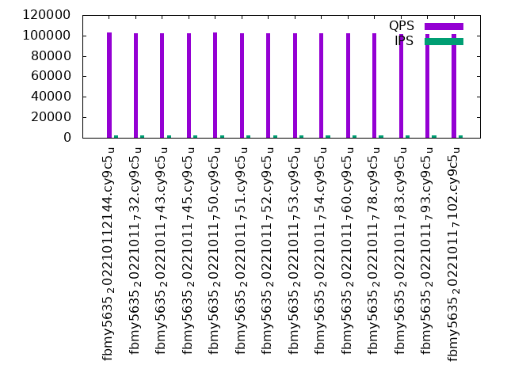
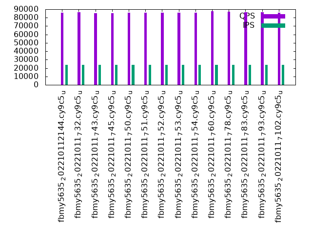

This is a report for the insert benchmark with 480M docs and 24 client(s). It is generated by scripts (bash, awk, sed) and Tufte might not be impressed. An overview of the insert benchmark is here and a short update is here. Below, by DBMS, I mean DBMS+version.config. An example is my8020.c10b40 where my means MySQL, 8020 is version 8.0.20 and c10b40 is the name for the configuration file.
The test server has 80 cores, hyperthreads enabled, 256G RAM and fast NVMe with XFS. The benchmark was run with 24 clients and there were 1 or 3 connections per client (1 for queries or inserts without rate limits, 1+1 for rate limited inserts+deletes). There are 24 tables, with a client per table. It loads 20M rows per-table without secondary indexes, creates secondary indexes, then inserts 50M rows per-table with a delete per insert to avoid growing the table. It then does 3 read+write tests for 3600s each that do queries as fast as possible with 100, 500 and then 1000 inserts/second/client concurrent with the queries and 1000 deletes/second to avoid growing the table. The database is cached by RocksDB.
The tested DBMS are:
The numbers are inserts/s for l.i0 and l.i1, indexed docs (or rows) /s for l.x and queries/s for q100, q500, q1000. The values are the average rate over the entire test for inserts (IPS) and queries (QPS). The range of values for IPS and QPS is split into 3 parts: bottom 25%, middle 50%, top 25%. Values in the bottom 25% have a red background, values in the top 25% have a green background and values in the middle have no color. A gray background is used for values that can be ignored because the DBMS did not sustain the target insert rate. Red backgrounds are not used when the minimum value is within 80% of the max value.
| dbms | l.i0 | l.x | l.i1 | q100.1 | q500.1 | q1000.1 |
|---|---|---|---|---|---|---|
| fbmy5635_202210112144.cy9c5_u | 594796 | 1395640 | 66552 | 102800 | 96915 | 85967 |
| fbmy5635_20221011_732.cy9c5_u | 594059 | 1412059 | 66130 | 102512 | 96732 | 86586 |
| fbmy5635_20221011_743.cy9c5_u | 592592 | 1403801 | 66025 | 102028 | 96348 | 85504 |
| fbmy5635_20221011_745.cy9c5_u | 593325 | 1403801 | 66280 | 102295 | 96336 | 85582 |
| fbmy5635_20221011_750.cy9c5_u | 583942 | 1424629 | 62357 | 102966 | 96444 | 86182 |
| fbmy5635_20221011_751.cy9c5_u | 592592 | 1407918 | 62186 | 102206 | 95693 | 86118 |
| fbmy5635_20221011_752.cy9c5_u | 590406 | 1399708 | 62830 | 102375 | 95755 | 86111 |
| fbmy5635_20221011_753.cy9c5_u | 583942 | 1412059 | 62979 | 102077 | 95403 | 86213 |
| fbmy5635_20221011_754.cy9c5_u | 583942 | 1424629 | 63158 | 102332 | 95906 | 85841 |
| fbmy5635_20221011_760.cy9c5_u | 602258 | 1399708 | 62099 | 102472 | 96114 | 87498 |
| fbmy5635_20221011_778.cy9c5_u | 607595 | 1387572 | 62653 | 102059 | 96087 | 87214 |
| fbmy5635_20221011_783.cy9c5_u | 641711 | 1416224 | 62982 | 101179 | 95752 | 86520 |
| fbmy5635_20221011_793.cy9c5_u | 636605 | 1407918 | 60021 | 101540 | 95629 | 86641 |
| fbmy5635_20221011_7102.cy9c5_u | 625000 | 1391594 | 60084 | 101184 | 95124 | 85897 |
This table has relative throughput, throughput for the DBMS relative to the DBMS in the first line, using the absolute throughput from the previous table. Values less than 0.95 have a yellow background. Values greater than 1.05 have a blue background.
| dbms | l.i0 | l.x | l.i1 | q100.1 | q500.1 | q1000.1 |
|---|---|---|---|---|---|---|
| fbmy5635_202210112144.cy9c5_u | 1.00 | 1.00 | 1.00 | 1.00 | 1.00 | 1.00 |
| fbmy5635_20221011_732.cy9c5_u | 1.00 | 1.01 | 0.99 | 1.00 | 1.00 | 1.01 |
| fbmy5635_20221011_743.cy9c5_u | 1.00 | 1.01 | 0.99 | 0.99 | 0.99 | 0.99 |
| fbmy5635_20221011_745.cy9c5_u | 1.00 | 1.01 | 1.00 | 1.00 | 0.99 | 1.00 |
| fbmy5635_20221011_750.cy9c5_u | 0.98 | 1.02 | 0.94 | 1.00 | 1.00 | 1.00 |
| fbmy5635_20221011_751.cy9c5_u | 1.00 | 1.01 | 0.93 | 0.99 | 0.99 | 1.00 |
| fbmy5635_20221011_752.cy9c5_u | 0.99 | 1.00 | 0.94 | 1.00 | 0.99 | 1.00 |
| fbmy5635_20221011_753.cy9c5_u | 0.98 | 1.01 | 0.95 | 0.99 | 0.98 | 1.00 |
| fbmy5635_20221011_754.cy9c5_u | 0.98 | 1.02 | 0.95 | 1.00 | 0.99 | 1.00 |
| fbmy5635_20221011_760.cy9c5_u | 1.01 | 1.00 | 0.93 | 1.00 | 0.99 | 1.02 |
| fbmy5635_20221011_778.cy9c5_u | 1.02 | 0.99 | 0.94 | 0.99 | 0.99 | 1.01 |
| fbmy5635_20221011_783.cy9c5_u | 1.08 | 1.01 | 0.95 | 0.98 | 0.99 | 1.01 |
| fbmy5635_20221011_793.cy9c5_u | 1.07 | 1.01 | 0.90 | 0.99 | 0.99 | 1.01 |
| fbmy5635_20221011_7102.cy9c5_u | 1.05 | 1.00 | 0.90 | 0.98 | 0.98 | 1.00 |
This lists the average rate of inserts/s for the tests that do inserts concurrent with queries. For such tests the query rate is listed in the table above. The read+write tests are setup so that the insert rate should match the target rate every second. Cells that are not at least 95% of the target have a red background to indicate a failure to satisfy the target.
| dbms | q100.1 | q500.1 | q1000.1 |
|---|---|---|---|
| fbmy5635_202210112144.cy9c5_u | 2381 | 11907 | 23821 |
| fbmy5635_20221011_732.cy9c5_u | 2381 | 11911 | 23828 |
| fbmy5635_20221011_743.cy9c5_u | 2381 | 11907 | 23828 |
| fbmy5635_20221011_745.cy9c5_u | 2381 | 11907 | 23828 |
| fbmy5635_20221011_750.cy9c5_u | 2381 | 11907 | 23828 |
| fbmy5635_20221011_751.cy9c5_u | 2381 | 11907 | 23828 |
| fbmy5635_20221011_752.cy9c5_u | 2381 | 11907 | 23834 |
| fbmy5635_20221011_753.cy9c5_u | 2381 | 11907 | 23828 |
| fbmy5635_20221011_754.cy9c5_u | 2381 | 11907 | 23821 |
| fbmy5635_20221011_760.cy9c5_u | 2381 | 11907 | 23821 |
| fbmy5635_20221011_778.cy9c5_u | 2381 | 11907 | 23821 |
| fbmy5635_20221011_783.cy9c5_u | 2381 | 11907 | 23828 |
| fbmy5635_20221011_793.cy9c5_u | 2381 | 11907 | 23828 |
| fbmy5635_20221011_7102.cy9c5_u | 2381 | 11907 | 23828 |
| target | 2400 | 12000 | 24000 |
l.i0: load without secondary indexes. Graphs for performance per 1-second interval are here.
Average throughput:
Insert response time histogram: each cell has the percentage of responses that take <= the time in the header and max is the max response time in seconds. For the max column values in the top 25% of the range have a red background and in the bottom 25% of the range have a green background. The red background is not used when the min value is within 80% of the max value.
| dbms | 256us | 1ms | 4ms | 16ms | 64ms | 256ms | 1s | 4s | 16s | gt | max |
|---|---|---|---|---|---|---|---|---|---|---|---|
| fbmy5635_202210112144.cy9c5_u | 0.232 | 65.459 | 34.268 | nonzero | 0.041 | 0.097 | |||||
| fbmy5635_20221011_732.cy9c5_u | 0.220 | 64.241 | 35.497 | nonzero | 0.041 | 0.182 | |||||
| fbmy5635_20221011_743.cy9c5_u | 0.181 | 65.728 | 34.049 | nonzero | 0.042 | 0.114 | |||||
| fbmy5635_20221011_745.cy9c5_u | 0.241 | 64.491 | 35.225 | 0.001 | 0.042 | 0.096 | |||||
| fbmy5635_20221011_750.cy9c5_u | 0.214 | 63.119 | 36.626 | 0.001 | 0.041 | 0.114 | |||||
| fbmy5635_20221011_751.cy9c5_u | 0.210 | 64.755 | 34.993 | nonzero | 0.041 | 0.107 | |||||
| fbmy5635_20221011_752.cy9c5_u | 0.210 | 64.199 | 35.549 | 0.001 | 0.041 | 0.096 | |||||
| fbmy5635_20221011_753.cy9c5_u | 0.246 | 62.048 | 37.665 | nonzero | 0.041 | 0.107 | |||||
| fbmy5635_20221011_754.cy9c5_u | 0.199 | 62.465 | 37.293 | 0.002 | 0.042 | 0.098 | |||||
| fbmy5635_20221011_760.cy9c5_u | 0.169 | 68.906 | 30.882 | 0.001 | 0.042 | 0.100 | |||||
| fbmy5635_20221011_778.cy9c5_u | 0.201 | 70.187 | 29.569 | 0.001 | 0.042 | 0.110 | |||||
| fbmy5635_20221011_783.cy9c5_u | 0.191 | 80.728 | 19.039 | nonzero | 0.042 | 0.092 | |||||
| fbmy5635_20221011_793.cy9c5_u | 0.204 | 79.433 | 20.321 | 0.042 | 0.094 | ||||||
| fbmy5635_20221011_7102.cy9c5_u | 0.168 | 76.370 | 23.420 | nonzero | 0.042 | 0.099 |
Performance metrics for the DBMS listed above. Some are normalized by throughput, others are not. Legend for results is here.
ips qps rps rmbps wps wmbps rpq rkbpq wpi wkbpi csps cpups cspq cpupq dbgb1 dbgb2 rss maxop p50 p99 tag 594796 0 0 0.0 2445.1 294.0 0.000 0.000 0.004 0.506 538647 40.8 0.906 55 15.5 16.6 5.1 0.097 25674 15795 480m.fbmy5635_202210112144.cy9c5_u 594059 0 0 0.0 2417.1 282.2 0.000 0.000 0.004 0.486 534475 41.1 0.900 55 15.6 16.8 5.0 0.182 25375 18581 480m.fbmy5635_20221011_732.cy9c5_u 592592 0 0 0.0 2444.9 293.1 0.000 0.000 0.004 0.506 501533 41.0 0.846 55 15.5 16.6 5.1 0.114 25574 14585 480m.fbmy5635_20221011_743.cy9c5_u 593325 0 0 0.0 2432.7 289.8 0.000 0.000 0.004 0.500 516353 41.1 0.870 55 15.5 16.7 5.1 0.096 25275 17882 480m.fbmy5635_20221011_745.cy9c5_u 583942 0 0 0.0 2617.1 313.4 0.000 0.000 0.004 0.550 481084 42.1 0.824 58 15.5 16.7 4.8 0.114 25272 14386 480m.fbmy5635_20221011_750.cy9c5_u 592592 0 0 0.0 2619.8 315.1 0.000 0.000 0.004 0.544 483148 42.4 0.815 57 15.4 16.6 4.8 0.107 25674 19083 480m.fbmy5635_20221011_751.cy9c5_u 590406 0 0 0.0 2641.9 317.8 0.000 0.000 0.004 0.551 489650 42.6 0.829 58 15.4 16.6 4.8 0.096 25674 14186 480m.fbmy5635_20221011_752.cy9c5_u 583942 0 0 0.0 2615.7 316.6 0.000 0.000 0.004 0.555 510025 42.6 0.873 58 15.5 16.6 4.8 0.107 25475 18781 480m.fbmy5635_20221011_753.cy9c5_u 583942 0 0 0.0 2597.8 312.1 0.000 0.000 0.004 0.547 507074 42.7 0.868 58 15.4 16.6 4.8 0.098 25175 14186 480m.fbmy5635_20221011_754.cy9c5_u 602258 0 0 0.0 2732.4 330.3 0.000 0.000 0.005 0.562 422430 42.0 0.701 56 15.4 16.5 4.8 0.100 26074 18080 480m.fbmy5635_20221011_760.cy9c5_u 607595 0 0 0.0 2795.9 337.9 0.000 0.000 0.005 0.570 387428 41.5 0.638 55 15.5 16.6 4.9 0.110 26174 19680 480m.fbmy5635_20221011_778.cy9c5_u 641711 0 0 0.0 2151.0 257.9 0.000 0.000 0.003 0.412 244501 36.1 0.381 45 15.2 16.4 4.1 0.092 27572 21978 480m.fbmy5635_20221011_783.cy9c5_u 636605 0 0 0.0 2157.0 258.6 0.000 0.000 0.003 0.416 234134 35.7 0.368 45 15.2 16.4 4.2 0.094 26973 21077 480m.fbmy5635_20221011_793.cy9c5_u 625000 0 0 0.0 2149.4 258.6 0.000 0.000 0.003 0.424 293576 37.6 0.470 48 15.0 16.2 4.0 0.099 27073 20480 480m.fbmy5635_20221011_7102.cy9c5_u
l.x: create secondary indexes.
Average throughput:
Performance metrics for the DBMS listed above. Some are normalized by throughput, others are not. Legend for results is here.
ips qps rps rmbps wps wmbps rpq rkbpq wpi wkbpi csps cpups cspq cpupq dbgb1 dbgb2 rss maxop p50 p99 tag 1395640 0 29 0.2 1864.7 204.6 0.000 0.000 0.001 0.150 32308 27.7 0.023 16 32.4 33.5 44.3 0.003 NA NA 480m.fbmy5635_202210112144.cy9c5_u 1412059 0 29 0.2 1886.6 205.4 0.000 0.000 0.001 0.149 28717 28.6 0.020 16 32.4 33.5 43.9 0.003 NA NA 480m.fbmy5635_20221011_732.cy9c5_u 1403801 0 29 0.2 1877.8 205.4 0.000 0.000 0.001 0.150 28218 28.8 0.020 16 32.4 33.5 43.2 0.003 NA NA 480m.fbmy5635_20221011_743.cy9c5_u 1403801 0 29 0.2 1897.8 208.3 0.000 0.000 0.001 0.152 26019 28.9 0.019 16 32.4 33.5 45.1 0.003 NA NA 480m.fbmy5635_20221011_745.cy9c5_u 1424629 0 30 0.2 1870.2 204.5 0.000 0.000 0.001 0.147 25828 28.7 0.018 16 32.4 33.5 41.8 0.003 NA NA 480m.fbmy5635_20221011_750.cy9c5_u 1407918 0 29 0.2 1821.1 198.7 0.000 0.000 0.001 0.145 28875 28.5 0.021 16 32.3 33.5 40.3 0.003 NA NA 480m.fbmy5635_20221011_751.cy9c5_u 1399708 0 29 0.2 1820.3 198.7 0.000 0.000 0.001 0.145 29174 28.8 0.021 16 32.4 33.6 41.9 0.002 NA NA 480m.fbmy5635_20221011_752.cy9c5_u 1412059 0 29 0.2 1847.1 202.4 0.000 0.000 0.001 0.147 29513 28.7 0.021 16 32.4 33.5 41.1 0.003 NA NA 480m.fbmy5635_20221011_753.cy9c5_u 1424629 0 30 0.2 1844.2 201.2 0.000 0.000 0.001 0.145 27255 29.3 0.019 16 32.4 33.5 42.0 0.003 NA NA 480m.fbmy5635_20221011_754.cy9c5_u 1399708 0 29 0.2 1809.3 197.4 0.000 0.000 0.001 0.144 31160 29.0 0.022 17 32.4 33.5 40.5 0.003 NA NA 480m.fbmy5635_20221011_760.cy9c5_u 1387572 0 29 0.2 1799.8 196.9 0.000 0.000 0.001 0.145 30533 29.2 0.022 17 32.4 33.6 41.1 0.002 NA NA 480m.fbmy5635_20221011_778.cy9c5_u 1416224 0 29 0.2 1783.7 194.6 0.000 0.000 0.001 0.141 28863 28.4 0.020 16 32.4 33.5 39.4 0.002 NA NA 480m.fbmy5635_20221011_783.cy9c5_u 1407918 0 29 0.2 1784.5 194.6 0.000 0.000 0.001 0.142 29526 29.0 0.021 16 32.3 33.5 41.1 0.003 NA NA 480m.fbmy5635_20221011_793.cy9c5_u 1391594 0 29 0.2 1755.4 191.1 0.000 0.000 0.001 0.141 25023 28.4 0.018 16 32.3 33.5 39.4 0.002 NA NA 480m.fbmy5635_20221011_7102.cy9c5_u
l.i1: continue load after secondary indexes created. Graphs for performance per 1-second interval are here.
Average throughput:
Insert response time histogram: each cell has the percentage of responses that take <= the time in the header and max is the max response time in seconds. For the max column values in the top 25% of the range have a red background and in the bottom 25% of the range have a green background. The red background is not used when the min value is within 80% of the max value.
| dbms | 256us | 1ms | 4ms | 16ms | 64ms | 256ms | 1s | 4s | 16s | gt | max |
|---|---|---|---|---|---|---|---|---|---|---|---|
| fbmy5635_202210112144.cy9c5_u | 0.040 | 22.756 | 77.202 | 0.003 | 0.177 | ||||||
| fbmy5635_20221011_732.cy9c5_u | 0.037 | 22.084 | 77.874 | 0.004 | 0.234 | ||||||
| fbmy5635_20221011_743.cy9c5_u | 0.034 | 21.941 | 78.020 | 0.004 | 0.158 | ||||||
| fbmy5635_20221011_745.cy9c5_u | nonzero | 0.043 | 22.314 | 77.638 | 0.005 | 0.176 | |||||
| fbmy5635_20221011_750.cy9c5_u | 0.032 | 15.692 | 84.274 | 0.003 | 0.154 | ||||||
| fbmy5635_20221011_751.cy9c5_u | 0.032 | 15.496 | 84.468 | 0.004 | 0.185 | ||||||
| fbmy5635_20221011_752.cy9c5_u | 0.034 | 16.580 | 83.383 | 0.003 | 0.137 | ||||||
| fbmy5635_20221011_753.cy9c5_u | 0.033 | 16.882 | 83.082 | 0.003 | 0.151 | ||||||
| fbmy5635_20221011_754.cy9c5_u | 0.035 | 17.156 | 82.805 | 0.003 | 0.147 | ||||||
| fbmy5635_20221011_760.cy9c5_u | 0.033 | 15.225 | 84.737 | 0.005 | 0.155 | ||||||
| fbmy5635_20221011_778.cy9c5_u | 0.035 | 16.081 | 83.881 | 0.004 | 0.158 | ||||||
| fbmy5635_20221011_783.cy9c5_u | 0.030 | 16.460 | 83.507 | 0.003 | 0.134 | ||||||
| fbmy5635_20221011_793.cy9c5_u | 0.031 | 12.147 | 87.819 | 0.003 | 0.170 | ||||||
| fbmy5635_20221011_7102.cy9c5_u | 0.033 | 12.150 | 87.813 | 0.004 | 0.166 |
Delete response time histogram: each cell has the percentage of responses that take <= the time in the header and max is the max response time in seconds. For the max column values in the top 25% of the range have a red background and in the bottom 25% of the range have a green background. The red background is not used when the min value is within 80% of the max value.
| dbms | 256us | 1ms | 4ms | 16ms | 64ms | 256ms | 1s | 4s | 16s | gt | max |
|---|---|---|---|---|---|---|---|---|---|---|---|
| fbmy5635_202210112144.cy9c5_u | nonzero | 0.040 | 25.760 | 74.196 | 0.003 | nonzero | 0.305 | ||||
| fbmy5635_20221011_732.cy9c5_u | 0.001 | 0.039 | 24.804 | 75.152 | 0.005 | 0.234 | |||||
| fbmy5635_20221011_743.cy9c5_u | nonzero | 0.035 | 24.966 | 74.994 | 0.005 | 0.157 | |||||
| fbmy5635_20221011_745.cy9c5_u | nonzero | 0.045 | 24.910 | 75.040 | 0.006 | 0.178 | |||||
| fbmy5635_20221011_750.cy9c5_u | 0.001 | 0.031 | 17.271 | 82.693 | 0.004 | 0.185 | |||||
| fbmy5635_20221011_751.cy9c5_u | nonzero | 0.033 | 16.939 | 83.024 | 0.005 | 0.198 | |||||
| fbmy5635_20221011_752.cy9c5_u | nonzero | 0.035 | 18.197 | 81.764 | 0.004 | 0.198 | |||||
| fbmy5635_20221011_753.cy9c5_u | nonzero | 0.033 | 18.487 | 81.477 | 0.004 | 0.198 | |||||
| fbmy5635_20221011_754.cy9c5_u | 0.001 | 0.035 | 18.849 | 81.111 | 0.004 | 0.194 | |||||
| fbmy5635_20221011_760.cy9c5_u | nonzero | 0.034 | 16.444 | 83.517 | 0.005 | 0.206 | |||||
| fbmy5635_20221011_778.cy9c5_u | nonzero | 0.035 | 17.310 | 82.650 | 0.004 | 0.187 | |||||
| fbmy5635_20221011_783.cy9c5_u | nonzero | 0.030 | 18.465 | 81.502 | 0.003 | 0.224 | |||||
| fbmy5635_20221011_793.cy9c5_u | nonzero | 0.031 | 13.594 | 86.370 | 0.004 | 0.172 | |||||
| fbmy5635_20221011_7102.cy9c5_u | nonzero | 0.033 | 13.706 | 86.256 | 0.004 | 0.185 |
Performance metrics for the DBMS listed above. Some are normalized by throughput, others are not. Legend for results is here.
ips qps rps rmbps wps wmbps rpq rkbpq wpi wkbpi csps cpups cspq cpupq dbgb1 dbgb2 rss maxop p50 p99 tag 66552 0 87 1.1 1822.9 217.6 0.001 0.017 0.027 3.348 137200 16.5 2.062 198 37.5 37.6 177.1 0.177 2797 2497 480m.fbmy5635_202210112144.cy9c5_u 66130 0 116 1.1 1811.1 192.4 0.002 0.018 0.027 2.980 131739 16.7 1.992 202 37.6 37.6 177.0 0.234 2748 2497 480m.fbmy5635_20221011_732.cy9c5_u 66025 0 82 1.1 1808.1 201.4 0.001 0.016 0.027 3.124 131476 16.9 1.991 205 37.4 37.4 177.1 0.158 2747 2497 480m.fbmy5635_20221011_743.cy9c5_u 66280 0 147 1.5 1814.2 207.5 0.002 0.022 0.027 3.206 129967 16.9 1.961 204 38.0 38.1 177.1 0.176 2748 2497 480m.fbmy5635_20221011_745.cy9c5_u 62357 0 81 1.0 1714.2 201.6 0.001 0.016 0.027 3.311 123174 16.8 1.975 216 36.9 37.0 176.7 0.154 2597 2347 480m.fbmy5635_20221011_750.cy9c5_u 62186 0 75 0.9 1711.8 194.9 0.001 0.015 0.028 3.210 128408 17.0 2.065 219 39.4 39.4 176.6 0.185 2597 2347 480m.fbmy5635_20221011_751.cy9c5_u 62830 0 73 0.9 1730.6 198.7 0.001 0.015 0.028 3.238 129325 17.1 2.058 218 37.4 37.5 176.6 0.137 2647 2348 480m.fbmy5635_20221011_752.cy9c5_u 62979 0 69 0.9 1731.5 199.0 0.001 0.015 0.027 3.235 131166 17.2 2.083 218 36.7 36.7 176.6 0.151 2647 2348 480m.fbmy5635_20221011_753.cy9c5_u 63158 0 68 0.9 1736.0 203.9 0.001 0.015 0.027 3.306 127096 17.2 2.012 218 37.4 37.4 176.6 0.147 2647 2348 480m.fbmy5635_20221011_754.cy9c5_u 62099 0 101 1.1 1724.4 198.8 0.002 0.018 0.028 3.279 117909 17.0 1.899 219 40.0 40.1 176.8 0.155 2597 2298 480m.fbmy5635_20221011_760.cy9c5_u 62653 0 98 1.1 1754.9 204.8 0.002 0.018 0.028 3.347 115100 17.1 1.837 218 36.8 36.9 176.9 0.158 2598 2347 480m.fbmy5635_20221011_778.cy9c5_u 62982 0 48 0.9 1536.0 180.4 0.001 0.015 0.024 2.933 118473 16.1 1.881 205 38.0 38.1 177.3 0.134 2647 2348 480m.fbmy5635_20221011_783.cy9c5_u 60021 0 64 1.0 1486.2 171.6 0.001 0.017 0.025 2.928 113819 15.6 1.896 208 37.7 37.8 177.1 0.170 2498 2247 480m.fbmy5635_20221011_793.cy9c5_u 60084 0 48 0.9 1460.0 168.0 0.001 0.015 0.024 2.863 114402 15.9 1.904 212 37.7 37.8 177.2 0.166 2498 2247 480m.fbmy5635_20221011_7102.cy9c5_u
q100.1: range queries with 100 insert/s per client. Graphs for performance per 1-second interval are here.
Average throughput:
Query response time histogram: each cell has the percentage of responses that take <= the time in the header and max is the max response time in seconds. For max values in the top 25% of the range have a red background and in the bottom 25% of the range have a green background. The red background is not used when the min value is within 80% of the max value.
| dbms | 256us | 1ms | 4ms | 16ms | 64ms | 256ms | 1s | 4s | 16s | gt | max |
|---|---|---|---|---|---|---|---|---|---|---|---|
| fbmy5635_202210112144.cy9c5_u | 78.872 | 21.127 | 0.001 | nonzero | 0.010 | ||||||
| fbmy5635_20221011_732.cy9c5_u | 78.497 | 21.502 | 0.001 | nonzero | nonzero | 0.047 | |||||
| fbmy5635_20221011_743.cy9c5_u | 77.704 | 22.295 | 0.001 | nonzero | nonzero | 0.062 | |||||
| fbmy5635_20221011_745.cy9c5_u | 78.250 | 21.749 | 0.001 | nonzero | nonzero | 0.059 | |||||
| fbmy5635_20221011_750.cy9c5_u | 79.078 | 20.921 | 0.001 | nonzero | nonzero | 0.046 | |||||
| fbmy5635_20221011_751.cy9c5_u | 77.923 | 22.076 | 0.001 | nonzero | nonzero | 0.023 | |||||
| fbmy5635_20221011_752.cy9c5_u | 78.273 | 21.726 | 0.001 | nonzero | nonzero | nonzero | 0.066 | ||||
| fbmy5635_20221011_753.cy9c5_u | 77.730 | 22.269 | 0.001 | nonzero | nonzero | nonzero | 0.080 | ||||
| fbmy5635_20221011_754.cy9c5_u | 78.128 | 21.871 | 0.001 | nonzero | nonzero | 0.024 | |||||
| fbmy5635_20221011_760.cy9c5_u | 78.125 | 21.874 | 0.001 | nonzero | nonzero | 0.023 | |||||
| fbmy5635_20221011_778.cy9c5_u | 77.681 | 22.318 | 0.001 | nonzero | 0.010 | ||||||
| fbmy5635_20221011_783.cy9c5_u | 76.214 | 23.785 | 0.001 | nonzero | nonzero | 0.022 | |||||
| fbmy5635_20221011_793.cy9c5_u | 76.636 | 23.363 | 0.001 | nonzero | nonzero | 0.021 | |||||
| fbmy5635_20221011_7102.cy9c5_u | 76.243 | 23.756 | 0.001 | nonzero | nonzero | 0.062 |
Insert response time histogram: each cell has the percentage of responses that take <= the time in the header and max is the max response time in seconds. For max values in the top 25% of the range have a red background and in the bottom 25% of the range have a green background. The red background is not used when the min value is within 80% of the max value.
| dbms | 256us | 1ms | 4ms | 16ms | 64ms | 256ms | 1s | 4s | 16s | gt | max |
|---|---|---|---|---|---|---|---|---|---|---|---|
| fbmy5635_202210112144.cy9c5_u | 99.997 | 0.003 | 0.008 | ||||||||
| fbmy5635_20221011_732.cy9c5_u | 99.999 | 0.001 | 0.004 | ||||||||
| fbmy5635_20221011_743.cy9c5_u | 99.995 | 0.005 | 0.007 | ||||||||
| fbmy5635_20221011_745.cy9c5_u | 99.994 | 0.006 | 0.007 | ||||||||
| fbmy5635_20221011_750.cy9c5_u | 99.998 | 0.002 | 0.006 | ||||||||
| fbmy5635_20221011_751.cy9c5_u | 99.996 | 0.004 | 0.006 | ||||||||
| fbmy5635_20221011_752.cy9c5_u | 99.997 | 0.003 | 0.005 | ||||||||
| fbmy5635_20221011_753.cy9c5_u | 99.987 | 0.013 | 0.007 | ||||||||
| fbmy5635_20221011_754.cy9c5_u | 99.995 | 0.005 | 0.007 | ||||||||
| fbmy5635_20221011_760.cy9c5_u | 99.998 | 0.002 | 0.005 | ||||||||
| fbmy5635_20221011_778.cy9c5_u | 99.998 | 0.002 | 0.006 | ||||||||
| fbmy5635_20221011_783.cy9c5_u | 99.597 | 0.399 | 0.004 | 0.053 | |||||||
| fbmy5635_20221011_793.cy9c5_u | 99.693 | 0.307 | 0.013 | ||||||||
| fbmy5635_20221011_7102.cy9c5_u | 99.936 | 0.064 | 0.007 |
Delete response time histogram: each cell has the percentage of responses that take <= the time in the header and max is the max response time in seconds. For max values in the top 25% of the range have a red background and in the bottom 25% of the range have a green background. The red background is not used when the min value is within 80% of the max value.
| dbms | 256us | 1ms | 4ms | 16ms | 64ms | 256ms | 1s | 4s | 16s | gt | max |
|---|---|---|---|---|---|---|---|---|---|---|---|
| fbmy5635_202210112144.cy9c5_u | 0.003 | 99.992 | 0.003 | 0.001 | 0.001 | 0.066 | |||||
| fbmy5635_20221011_732.cy9c5_u | 0.005 | 99.990 | 0.003 | 0.002 | 0.062 | ||||||
| fbmy5635_20221011_743.cy9c5_u | 0.003 | 99.992 | 0.003 | 0.001 | 0.001 | 0.089 | |||||
| fbmy5635_20221011_745.cy9c5_u | 99.990 | 0.006 | 0.003 | 0.001 | 0.090 | ||||||
| fbmy5635_20221011_750.cy9c5_u | 0.001 | 99.994 | 0.002 | 0.002 | 0.001 | 0.064 | |||||
| fbmy5635_20221011_751.cy9c5_u | 99.994 | 0.004 | 0.002 | 0.044 | |||||||
| fbmy5635_20221011_752.cy9c5_u | 0.001 | 99.995 | 0.001 | 0.003 | 0.053 | ||||||
| fbmy5635_20221011_753.cy9c5_u | 99.992 | 0.006 | 0.002 | 0.057 | |||||||
| fbmy5635_20221011_754.cy9c5_u | 99.992 | 0.003 | 0.003 | 0.001 | 0.068 | ||||||
| fbmy5635_20221011_760.cy9c5_u | 99.994 | 0.002 | 0.003 | 0.001 | 0.077 | ||||||
| fbmy5635_20221011_778.cy9c5_u | 0.001 | 99.991 | 0.004 | 0.003 | 0.001 | 0.067 | |||||
| fbmy5635_20221011_783.cy9c5_u | 0.001 | 99.767 | 0.225 | 0.006 | 0.058 | ||||||
| fbmy5635_20221011_793.cy9c5_u | 99.802 | 0.196 | 0.002 | 0.001 | 0.079 | ||||||
| fbmy5635_20221011_7102.cy9c5_u | 0.001 | 99.963 | 0.034 | 0.002 | 0.001 | 0.067 |
Performance metrics for the DBMS listed above. Some are normalized by throughput, others are not. Legend for results is here.
ips qps rps rmbps wps wmbps rpq rkbpq wpi wkbpi csps cpups cspq cpupq dbgb1 dbgb2 rss maxop p50 p99 tag 2381 102800 5 0.1 97.1 10.8 0.000 0.001 0.041 4.640 465340 31.7 4.527 247 36.0 37.9 178.2 0.010 4284 3788 480m.fbmy5635_202210112144.cy9c5_u 2381 102512 5 0.1 98.0 11.1 0.000 0.001 0.041 4.792 462090 32.1 4.508 251 36.0 37.9 178.3 0.047 4284 3789 480m.fbmy5635_20221011_732.cy9c5_u 2381 102028 8 0.1 97.1 11.0 0.000 0.001 0.041 4.741 457506 32.1 4.484 252 36.0 37.9 178.3 0.062 4236 3724 480m.fbmy5635_20221011_743.cy9c5_u 2381 102295 8 0.1 103.6 11.8 0.000 0.001 0.043 5.082 456204 32.0 4.460 250 35.9 37.8 178.5 0.059 4284 3740 480m.fbmy5635_20221011_745.cy9c5_u 2381 102966 2 0.0 87.6 9.9 0.000 0.000 0.037 4.237 456020 32.0 4.429 249 36.0 37.9 177.9 0.046 4315 3788 480m.fbmy5635_20221011_750.cy9c5_u 2381 102206 6 0.1 88.2 9.9 0.000 0.001 0.037 4.272 457694 32.1 4.478 251 36.0 37.9 178.0 0.023 4300 3804 480m.fbmy5635_20221011_751.cy9c5_u 2381 102375 5 0.0 92.7 10.5 0.000 0.000 0.039 4.508 460055 32.1 4.494 251 35.9 37.8 178.0 0.066 4267 3788 480m.fbmy5635_20221011_752.cy9c5_u 2381 102077 4 0.1 90.1 10.2 0.000 0.001 0.038 4.369 457782 32.0 4.485 251 36.1 38.0 178.0 0.080 4300 3804 480m.fbmy5635_20221011_753.cy9c5_u 2381 102332 7 0.1 94.3 10.7 0.000 0.001 0.040 4.586 456717 32.0 4.463 250 36.1 38.0 178.1 0.024 4252 3772 480m.fbmy5635_20221011_754.cy9c5_u 2381 102472 10 0.1 92.8 10.5 0.000 0.001 0.039 4.512 454402 32.0 4.434 250 36.0 38.0 178.3 0.023 4252 3708 480m.fbmy5635_20221011_760.cy9c5_u 2381 102059 7 0.0 96.5 11.0 0.000 0.000 0.041 4.709 452925 32.0 4.438 251 35.9 37.8 178.4 0.010 4268 3772 480m.fbmy5635_20221011_778.cy9c5_u 2381 101179 11 0.3 78.3 8.7 0.000 0.003 0.033 3.721 448750 32.0 4.435 253 37.1 39.1 178.6 0.022 4235 3741 480m.fbmy5635_20221011_783.cy9c5_u 2381 101540 13 0.3 79.1 8.8 0.000 0.003 0.033 3.773 448469 31.9 4.417 251 37.1 39.0 178.5 0.021 4252 3756 480m.fbmy5635_20221011_793.cy9c5_u 2381 101184 14 0.3 80.1 8.9 0.000 0.003 0.034 3.817 445218 32.0 4.400 253 37.2 39.1 178.7 0.062 4219 3692 480m.fbmy5635_20221011_7102.cy9c5_u
q500.1: range queries with 500 insert/s per client. Graphs for performance per 1-second interval are here.
Average throughput:
Query response time histogram: each cell has the percentage of responses that take <= the time in the header and max is the max response time in seconds. For max values in the top 25% of the range have a red background and in the bottom 25% of the range have a green background. The red background is not used when the min value is within 80% of the max value.
| dbms | 256us | 1ms | 4ms | 16ms | 64ms | 256ms | 1s | 4s | 16s | gt | max |
|---|---|---|---|---|---|---|---|---|---|---|---|
| fbmy5635_202210112144.cy9c5_u | 69.110 | 30.888 | 0.001 | nonzero | nonzero | nonzero | 0.083 | ||||
| fbmy5635_20221011_732.cy9c5_u | 68.806 | 31.192 | 0.001 | nonzero | nonzero | nonzero | 0.084 | ||||
| fbmy5635_20221011_743.cy9c5_u | 68.067 | 31.931 | 0.001 | nonzero | nonzero | nonzero | 0.084 | ||||
| fbmy5635_20221011_745.cy9c5_u | 68.135 | 31.864 | 0.001 | nonzero | nonzero | nonzero | 0.115 | ||||
| fbmy5635_20221011_750.cy9c5_u | 68.159 | 31.839 | 0.001 | nonzero | nonzero | nonzero | 0.084 | ||||
| fbmy5635_20221011_751.cy9c5_u | 66.794 | 33.204 | 0.001 | nonzero | nonzero | nonzero | 0.132 | ||||
| fbmy5635_20221011_752.cy9c5_u | 66.958 | 33.040 | 0.001 | nonzero | nonzero | nonzero | 0.135 | ||||
| fbmy5635_20221011_753.cy9c5_u | 66.327 | 33.671 | 0.002 | nonzero | nonzero | nonzero | 0.081 | ||||
| fbmy5635_20221011_754.cy9c5_u | 67.203 | 32.795 | 0.001 | nonzero | nonzero | nonzero | 0.082 | ||||
| fbmy5635_20221011_760.cy9c5_u | 67.443 | 32.555 | 0.001 | nonzero | nonzero | nonzero | 0.088 | ||||
| fbmy5635_20221011_778.cy9c5_u | 67.585 | 32.413 | 0.001 | nonzero | nonzero | nonzero | 0.083 | ||||
| fbmy5635_20221011_783.cy9c5_u | 66.841 | 33.157 | 0.002 | nonzero | nonzero | nonzero | 0.081 | ||||
| fbmy5635_20221011_793.cy9c5_u | 66.556 | 33.441 | 0.002 | nonzero | nonzero | nonzero | 0.082 | ||||
| fbmy5635_20221011_7102.cy9c5_u | 65.576 | 34.421 | 0.002 | nonzero | nonzero | nonzero | 0.091 |
Insert response time histogram: each cell has the percentage of responses that take <= the time in the header and max is the max response time in seconds. For max values in the top 25% of the range have a red background and in the bottom 25% of the range have a green background. The red background is not used when the min value is within 80% of the max value.
| dbms | 256us | 1ms | 4ms | 16ms | 64ms | 256ms | 1s | 4s | 16s | gt | max |
|---|---|---|---|---|---|---|---|---|---|---|---|
| fbmy5635_202210112144.cy9c5_u | 99.103 | 0.894 | 0.001 | 0.001 | 0.082 | ||||||
| fbmy5635_20221011_732.cy9c5_u | 99.983 | 0.013 | 0.002 | 0.002 | 0.081 | ||||||
| fbmy5635_20221011_743.cy9c5_u | 99.940 | 0.058 | 0.001 | 0.001 | 0.084 | ||||||
| fbmy5635_20221011_745.cy9c5_u | 96.787 | 3.210 | 0.002 | nonzero | 0.077 | ||||||
| fbmy5635_20221011_750.cy9c5_u | 96.360 | 3.638 | 0.002 | 0.001 | 0.082 | ||||||
| fbmy5635_20221011_751.cy9c5_u | 93.516 | 6.480 | 0.003 | 0.001 | 0.083 | ||||||
| fbmy5635_20221011_752.cy9c5_u | 99.960 | 0.038 | 0.002 | 0.001 | 0.079 | ||||||
| fbmy5635_20221011_753.cy9c5_u | 99.956 | 0.038 | 0.004 | 0.002 | 0.081 | ||||||
| fbmy5635_20221011_754.cy9c5_u | 99.989 | 0.009 | 0.001 | nonzero | 0.079 | ||||||
| fbmy5635_20221011_760.cy9c5_u | 99.976 | 0.020 | 0.003 | 0.001 | 0.079 | ||||||
| fbmy5635_20221011_778.cy9c5_u | 99.345 | 0.652 | 0.002 | 0.001 | 0.082 | ||||||
| fbmy5635_20221011_783.cy9c5_u | 37.272 | 62.713 | 0.013 | 0.002 | 0.086 | ||||||
| fbmy5635_20221011_793.cy9c5_u | 26.088 | 64.295 | 9.616 | 0.001 | 0.088 | ||||||
| fbmy5635_20221011_7102.cy9c5_u | 32.251 | 65.357 | 2.389 | 0.003 | 0.099 |
Delete response time histogram: each cell has the percentage of responses that take <= the time in the header and max is the max response time in seconds. For max values in the top 25% of the range have a red background and in the bottom 25% of the range have a green background. The red background is not used when the min value is within 80% of the max value.
| dbms | 256us | 1ms | 4ms | 16ms | 64ms | 256ms | 1s | 4s | 16s | gt | max |
|---|---|---|---|---|---|---|---|---|---|---|---|
| fbmy5635_202210112144.cy9c5_u | 0.001 | 99.332 | 0.655 | 0.010 | 0.003 | 0.096 | |||||
| fbmy5635_20221011_732.cy9c5_u | 0.001 | 99.974 | 0.013 | 0.009 | 0.003 | 0.101 | |||||
| fbmy5635_20221011_743.cy9c5_u | nonzero | 99.942 | 0.047 | 0.008 | 0.002 | 0.091 | |||||
| fbmy5635_20221011_745.cy9c5_u | 0.003 | 97.431 | 2.557 | 0.008 | 0.002 | 0.096 | |||||
| fbmy5635_20221011_750.cy9c5_u | nonzero | 96.946 | 3.042 | 0.010 | 0.002 | 0.085 | |||||
| fbmy5635_20221011_751.cy9c5_u | nonzero | 94.597 | 5.390 | 0.011 | 0.002 | 0.088 | |||||
| fbmy5635_20221011_752.cy9c5_u | nonzero | 99.960 | 0.027 | 0.011 | 0.002 | 0.088 | |||||
| fbmy5635_20221011_753.cy9c5_u | 99.960 | 0.027 | 0.010 | 0.003 | 0.082 | ||||||
| fbmy5635_20221011_754.cy9c5_u | nonzero | 99.973 | 0.013 | 0.011 | 0.003 | 0.089 | |||||
| fbmy5635_20221011_760.cy9c5_u | 99.968 | 0.019 | 0.011 | 0.002 | 0.078 | ||||||
| fbmy5635_20221011_778.cy9c5_u | 99.460 | 0.529 | 0.009 | 0.003 | 0.097 | ||||||
| fbmy5635_20221011_783.cy9c5_u | 41.932 | 58.046 | 0.018 | 0.004 | 0.087 | ||||||
| fbmy5635_20221011_793.cy9c5_u | 27.872 | 63.348 | 8.775 | 0.005 | 0.092 | ||||||
| fbmy5635_20221011_7102.cy9c5_u | 0.001 | 34.985 | 62.899 | 2.111 | 0.004 | 0.099 |
Performance metrics for the DBMS listed above. Some are normalized by throughput, others are not. Legend for results is here.
ips qps rps rmbps wps wmbps rpq rkbpq wpi wkbpi csps cpups cspq cpupq dbgb1 dbgb2 rss maxop p50 p99 tag 11907 96915 25 0.3 381.6 44.6 0.000 0.003 0.032 3.835 454727 33.6 4.692 277 36.3 37.4 183.4 0.083 4060 3532 480m.fbmy5635_202210112144.cy9c5_u 11911 96732 25 0.2 379.9 44.6 0.000 0.002 0.032 3.837 450250 34.0 4.655 281 36.4 37.6 183.8 0.084 4028 3501 480m.fbmy5635_20221011_732.cy9c5_u 11907 96348 29 0.3 378.2 44.4 0.000 0.003 0.032 3.819 445938 33.9 4.628 281 36.1 37.3 183.6 0.084 4028 3485 480m.fbmy5635_20221011_743.cy9c5_u 11907 96336 20 0.2 376.8 44.3 0.000 0.002 0.032 3.806 444839 33.8 4.618 281 36.0 37.2 183.8 0.115 4028 3469 480m.fbmy5635_20221011_745.cy9c5_u 11907 96444 25 0.3 370.2 43.4 0.000 0.003 0.031 3.734 442882 34.1 4.592 283 36.0 37.2 183.1 0.084 4044 3453 480m.fbmy5635_20221011_750.cy9c5_u 11907 95693 22 0.2 368.7 43.3 0.000 0.002 0.031 3.724 443968 33.9 4.640 283 36.3 37.5 183.0 0.132 3996 3437 480m.fbmy5635_20221011_751.cy9c5_u 11907 95755 21 0.2 371.8 43.7 0.000 0.002 0.031 3.754 445544 34.0 4.653 284 36.0 37.1 183.1 0.135 3980 3437 480m.fbmy5635_20221011_752.cy9c5_u 11907 95403 29 0.3 371.9 43.6 0.000 0.003 0.031 3.752 444268 34.2 4.657 287 36.4 37.5 183.2 0.081 3980 3421 480m.fbmy5635_20221011_753.cy9c5_u 11907 95906 27 0.2 370.5 43.5 0.000 0.002 0.031 3.737 442600 34.0 4.615 284 36.0 37.2 183.3 0.082 4012 3469 480m.fbmy5635_20221011_754.cy9c5_u 11907 96114 31 0.2 369.3 43.0 0.000 0.003 0.031 3.699 439391 34.0 4.572 283 36.1 37.3 183.2 0.088 4012 3421 480m.fbmy5635_20221011_760.cy9c5_u 11907 96087 33 0.2 374.1 43.9 0.000 0.003 0.031 3.775 439574 34.0 4.575 283 36.4 37.7 183.3 0.083 4012 3469 480m.fbmy5635_20221011_778.cy9c5_u 11907 95752 16 0.3 329.3 38.3 0.000 0.003 0.028 3.295 439080 34.1 4.586 285 37.3 38.5 183.1 0.081 4012 3469 480m.fbmy5635_20221011_783.cy9c5_u 11907 95629 16 0.2 329.6 38.1 0.000 0.002 0.028 3.277 438910 34.1 4.590 285 37.5 38.7 183.2 0.082 3980 3452 480m.fbmy5635_20221011_793.cy9c5_u 11907 95124 14 0.2 325.1 36.8 0.000 0.002 0.027 3.169 434291 34.0 4.566 286 37.3 38.4 183.0 0.091 3981 3421 480m.fbmy5635_20221011_7102.cy9c5_u
q1000.1: range queries with 1000 insert/s per client. Graphs for performance per 1-second interval are here.
Average throughput:
Query response time histogram: each cell has the percentage of responses that take <= the time in the header and max is the max response time in seconds. For max values in the top 25% of the range have a red background and in the bottom 25% of the range have a green background. The red background is not used when the min value is within 80% of the max value.
| dbms | 256us | 1ms | 4ms | 16ms | 64ms | 256ms | 1s | 4s | 16s | gt | max |
|---|---|---|---|---|---|---|---|---|---|---|---|
| fbmy5635_202210112144.cy9c5_u | 45.682 | 54.311 | 0.007 | nonzero | nonzero | nonzero | 0.077 | ||||
| fbmy5635_20221011_732.cy9c5_u | 47.055 | 52.940 | 0.005 | nonzero | nonzero | nonzero | 0.081 | ||||
| fbmy5635_20221011_743.cy9c5_u | 44.480 | 55.512 | 0.008 | nonzero | nonzero | nonzero | 0.094 | ||||
| fbmy5635_20221011_745.cy9c5_u | 44.765 | 55.227 | 0.008 | nonzero | nonzero | nonzero | 0.099 | ||||
| fbmy5635_20221011_750.cy9c5_u | 45.874 | 54.119 | 0.007 | nonzero | nonzero | nonzero | 0.090 | ||||
| fbmy5635_20221011_751.cy9c5_u | 45.850 | 54.142 | 0.007 | nonzero | nonzero | nonzero | 0.093 | ||||
| fbmy5635_20221011_752.cy9c5_u | 45.745 | 54.248 | 0.007 | nonzero | nonzero | nonzero | 0.088 | ||||
| fbmy5635_20221011_753.cy9c5_u | 45.951 | 54.042 | 0.007 | nonzero | nonzero | nonzero | 0.143 | ||||
| fbmy5635_20221011_754.cy9c5_u | 45.295 | 54.695 | 0.009 | nonzero | nonzero | nonzero | 0.105 | ||||
| fbmy5635_20221011_760.cy9c5_u | 49.094 | 50.901 | 0.005 | nonzero | nonzero | nonzero | 0.125 | ||||
| fbmy5635_20221011_778.cy9c5_u | 48.584 | 51.410 | 0.006 | nonzero | nonzero | nonzero | 0.085 | ||||
| fbmy5635_20221011_783.cy9c5_u | 47.036 | 52.952 | 0.012 | nonzero | nonzero | nonzero | 0.159 | ||||
| fbmy5635_20221011_793.cy9c5_u | 47.047 | 52.942 | 0.012 | nonzero | nonzero | nonzero | 0.090 | ||||
| fbmy5635_20221011_7102.cy9c5_u | 45.333 | 54.656 | 0.011 | nonzero | nonzero | nonzero | 0.077 |
Insert response time histogram: each cell has the percentage of responses that take <= the time in the header and max is the max response time in seconds. For max values in the top 25% of the range have a red background and in the bottom 25% of the range have a green background. The red background is not used when the min value is within 80% of the max value.
| dbms | 256us | 1ms | 4ms | 16ms | 64ms | 256ms | 1s | 4s | 16s | gt | max |
|---|---|---|---|---|---|---|---|---|---|---|---|
| fbmy5635_202210112144.cy9c5_u | 19.120 | 40.549 | 40.330 | nonzero | 0.087 | ||||||
| fbmy5635_20221011_732.cy9c5_u | 27.753 | 65.972 | 6.272 | 0.003 | 0.098 | ||||||
| fbmy5635_20221011_743.cy9c5_u | 14.280 | 38.522 | 47.197 | 0.001 | 0.099 | ||||||
| fbmy5635_20221011_745.cy9c5_u | 15.132 | 37.915 | 46.949 | 0.004 | 0.130 | ||||||
| fbmy5635_20221011_750.cy9c5_u | 10.672 | 60.824 | 28.503 | 0.001 | 0.102 | ||||||
| fbmy5635_20221011_751.cy9c5_u | 15.050 | 38.808 | 46.140 | 0.001 | 0.099 | ||||||
| fbmy5635_20221011_752.cy9c5_u | 4.119 | 59.007 | 36.871 | 0.003 | 0.102 | ||||||
| fbmy5635_20221011_753.cy9c5_u | 13.488 | 60.045 | 26.465 | 0.002 | 0.100 | ||||||
| fbmy5635_20221011_754.cy9c5_u | 16.599 | 30.395 | 53.002 | 0.004 | 0.107 | ||||||
| fbmy5635_20221011_760.cy9c5_u | 19.811 | 70.545 | 9.644 | 0.046 | |||||||
| fbmy5635_20221011_778.cy9c5_u | 15.679 | 71.840 | 12.481 | 0.001 | 0.090 | ||||||
| fbmy5635_20221011_783.cy9c5_u | 1.243 | 14.055 | 84.701 | 0.001 | 0.101 | ||||||
| fbmy5635_20221011_793.cy9c5_u | 1.741 | 12.893 | 85.363 | 0.003 | 0.099 | ||||||
| fbmy5635_20221011_7102.cy9c5_u | 1.384 | 14.027 | 84.585 | 0.004 | 0.104 |
Delete response time histogram: each cell has the percentage of responses that take <= the time in the header and max is the max response time in seconds. For max values in the top 25% of the range have a red background and in the bottom 25% of the range have a green background. The red background is not used when the min value is within 80% of the max value.
| dbms | 256us | 1ms | 4ms | 16ms | 64ms | 256ms | 1s | 4s | 16s | gt | max |
|---|---|---|---|---|---|---|---|---|---|---|---|
| fbmy5635_202210112144.cy9c5_u | 19.619 | 40.805 | 39.575 | 0.001 | 0.105 | ||||||
| fbmy5635_20221011_732.cy9c5_u | 29.746 | 64.201 | 6.048 | 0.004 | 0.102 | ||||||
| fbmy5635_20221011_743.cy9c5_u | 14.497 | 39.496 | 46.004 | 0.003 | 0.107 | ||||||
| fbmy5635_20221011_745.cy9c5_u | 15.503 | 38.402 | 46.089 | 0.006 | 0.130 | ||||||
| fbmy5635_20221011_750.cy9c5_u | 11.028 | 61.160 | 27.809 | 0.003 | 0.102 | ||||||
| fbmy5635_20221011_751.cy9c5_u | 15.344 | 39.362 | 45.290 | 0.003 | 0.120 | ||||||
| fbmy5635_20221011_752.cy9c5_u | 4.325 | 59.785 | 35.886 | 0.004 | 0.114 | ||||||
| fbmy5635_20221011_753.cy9c5_u | 14.637 | 59.504 | 25.856 | 0.003 | 0.100 | ||||||
| fbmy5635_20221011_754.cy9c5_u | 16.674 | 30.983 | 52.338 | 0.005 | 0.106 | ||||||
| fbmy5635_20221011_760.cy9c5_u | 20.951 | 69.686 | 9.361 | 0.002 | 0.100 | ||||||
| fbmy5635_20221011_778.cy9c5_u | 16.406 | 71.399 | 12.192 | 0.003 | 0.132 | ||||||
| fbmy5635_20221011_783.cy9c5_u | 1.206 | 15.305 | 83.487 | 0.002 | 0.099 | ||||||
| fbmy5635_20221011_793.cy9c5_u | 1.713 | 13.920 | 84.363 | 0.004 | 0.099 | ||||||
| fbmy5635_20221011_7102.cy9c5_u | nonzero | 1.372 | 15.119 | 83.504 | 0.005 | 0.104 |
Performance metrics for the DBMS listed above. Some are normalized by throughput, others are not. Legend for results is here.
ips qps rps rmbps wps wmbps rpq rkbpq wpi wkbpi csps cpups cspq cpupq dbgb1 dbgb2 rss maxop p50 p99 tag 23821 85967 61 0.5 677.3 78.8 0.001 0.006 0.028 3.388 443432 36.5 5.158 340 38.2 39.9 185.2 0.077 3596 3037 480m.fbmy5635_202210112144.cy9c5_u 23828 86586 60 0.5 683.1 80.0 0.001 0.006 0.029 3.439 441524 36.8 5.099 340 37.8 39.5 185.3 0.081 3612 3085 480m.fbmy5635_20221011_732.cy9c5_u 23828 85504 59 0.5 666.4 78.4 0.001 0.005 0.028 3.368 432789 37.0 5.062 346 38.0 39.7 185.1 0.094 3564 3053 480m.fbmy5635_20221011_743.cy9c5_u 23828 85582 78 0.6 681.1 79.9 0.001 0.008 0.029 3.433 430644 36.9 5.032 345 37.6 39.2 185.2 0.099 3548 3005 480m.fbmy5635_20221011_745.cy9c5_u 23828 86182 50 0.5 705.5 83.1 0.001 0.006 0.030 3.569 428130 37.4 4.968 347 37.2 38.8 185.5 0.090 3580 3021 480m.fbmy5635_20221011_750.cy9c5_u 23828 86118 59 0.5 705.7 83.3 0.001 0.006 0.030 3.581 432040 37.4 5.017 347 36.9 38.5 185.3 0.093 3596 3037 480m.fbmy5635_20221011_751.cy9c5_u 23834 86111 48 0.4 703.9 83.3 0.001 0.005 0.030 3.579 435218 37.4 5.054 347 37.1 38.7 185.2 0.088 3583 3005 480m.fbmy5635_20221011_752.cy9c5_u 23828 86213 64 0.5 699.0 82.0 0.001 0.006 0.029 3.522 434008 37.4 5.034 347 36.9 38.5 185.2 0.143 3580 3037 480m.fbmy5635_20221011_753.cy9c5_u 23821 85841 60 0.5 710.8 83.7 0.001 0.005 0.030 3.597 430391 37.5 5.014 349 36.8 38.5 185.3 0.105 3564 2957 480m.fbmy5635_20221011_754.cy9c5_u 23821 87498 107 0.8 702.2 81.9 0.001 0.009 0.029 3.520 428178 37.4 4.894 342 36.9 38.5 185.3 0.125 3644 3037 480m.fbmy5635_20221011_760.cy9c5_u 23821 87214 113 0.8 696.3 81.7 0.001 0.009 0.029 3.510 428047 37.4 4.908 343 36.7 38.4 185.4 0.085 3644 3069 480m.fbmy5635_20221011_778.cy9c5_u 23828 86520 34 0.4 612.7 71.6 0.000 0.005 0.026 3.078 428202 37.3 4.949 345 38.1 39.8 185.2 0.159 3596 3005 480m.fbmy5635_20221011_783.cy9c5_u 23828 86641 59 0.5 611.3 70.8 0.001 0.006 0.026 3.041 427693 37.5 4.936 346 38.3 40.0 185.3 0.090 3596 3021 480m.fbmy5635_20221011_793.cy9c5_u 23828 85897 48 0.5 611.0 70.8 0.001 0.006 0.026 3.041 423819 37.6 4.934 350 38.4 40.0 185.4 0.077 3580 2989 480m.fbmy5635_20221011_7102.cy9c5_u
l.i0: load without secondary indexes
Performance metrics for all DBMS, not just the ones listed above. Some are normalized by throughput, others are not. Legend for results is here.
ips qps rps rmbps wps wmbps rpq rkbpq wpi wkbpi csps cpups cspq cpupq dbgb1 dbgb2 rss maxop p50 p99 tag 594796 0 0 0.0 2445.1 294.0 0.000 0.000 0.004 0.506 538647 40.8 0.906 55 15.5 16.6 5.1 0.097 25674 15795 480m.fbmy5635_202210112144.cy9c5_u 594059 0 0 0.0 2417.1 282.2 0.000 0.000 0.004 0.486 534475 41.1 0.900 55 15.6 16.8 5.0 0.182 25375 18581 480m.fbmy5635_20221011_732.cy9c5_u 592592 0 0 0.0 2444.9 293.1 0.000 0.000 0.004 0.506 501533 41.0 0.846 55 15.5 16.6 5.1 0.114 25574 14585 480m.fbmy5635_20221011_743.cy9c5_u 593325 0 0 0.0 2432.7 289.8 0.000 0.000 0.004 0.500 516353 41.1 0.870 55 15.5 16.7 5.1 0.096 25275 17882 480m.fbmy5635_20221011_745.cy9c5_u 583942 0 0 0.0 2617.1 313.4 0.000 0.000 0.004 0.550 481084 42.1 0.824 58 15.5 16.7 4.8 0.114 25272 14386 480m.fbmy5635_20221011_750.cy9c5_u 592592 0 0 0.0 2619.8 315.1 0.000 0.000 0.004 0.544 483148 42.4 0.815 57 15.4 16.6 4.8 0.107 25674 19083 480m.fbmy5635_20221011_751.cy9c5_u 590406 0 0 0.0 2641.9 317.8 0.000 0.000 0.004 0.551 489650 42.6 0.829 58 15.4 16.6 4.8 0.096 25674 14186 480m.fbmy5635_20221011_752.cy9c5_u 583942 0 0 0.0 2615.7 316.6 0.000 0.000 0.004 0.555 510025 42.6 0.873 58 15.5 16.6 4.8 0.107 25475 18781 480m.fbmy5635_20221011_753.cy9c5_u 583942 0 0 0.0 2597.8 312.1 0.000 0.000 0.004 0.547 507074 42.7 0.868 58 15.4 16.6 4.8 0.098 25175 14186 480m.fbmy5635_20221011_754.cy9c5_u 602258 0 0 0.0 2732.4 330.3 0.000 0.000 0.005 0.562 422430 42.0 0.701 56 15.4 16.5 4.8 0.100 26074 18080 480m.fbmy5635_20221011_760.cy9c5_u 607595 0 0 0.0 2795.9 337.9 0.000 0.000 0.005 0.570 387428 41.5 0.638 55 15.5 16.6 4.9 0.110 26174 19680 480m.fbmy5635_20221011_778.cy9c5_u 641711 0 0 0.0 2151.0 257.9 0.000 0.000 0.003 0.412 244501 36.1 0.381 45 15.2 16.4 4.1 0.092 27572 21978 480m.fbmy5635_20221011_783.cy9c5_u 636605 0 0 0.0 2157.0 258.6 0.000 0.000 0.003 0.416 234134 35.7 0.368 45 15.2 16.4 4.2 0.094 26973 21077 480m.fbmy5635_20221011_793.cy9c5_u 625000 0 0 0.0 2149.4 258.6 0.000 0.000 0.003 0.424 293576 37.6 0.470 48 15.0 16.2 4.0 0.099 27073 20480 480m.fbmy5635_20221011_7102.cy9c5_u
l.x: create secondary indexes
Performance metrics for all DBMS, not just the ones listed above. Some are normalized by throughput, others are not. Legend for results is here.
ips qps rps rmbps wps wmbps rpq rkbpq wpi wkbpi csps cpups cspq cpupq dbgb1 dbgb2 rss maxop p50 p99 tag 1395640 0 29 0.2 1864.7 204.6 0.000 0.000 0.001 0.150 32308 27.7 0.023 16 32.4 33.5 44.3 0.003 NA NA 480m.fbmy5635_202210112144.cy9c5_u 1412059 0 29 0.2 1886.6 205.4 0.000 0.000 0.001 0.149 28717 28.6 0.020 16 32.4 33.5 43.9 0.003 NA NA 480m.fbmy5635_20221011_732.cy9c5_u 1403801 0 29 0.2 1877.8 205.4 0.000 0.000 0.001 0.150 28218 28.8 0.020 16 32.4 33.5 43.2 0.003 NA NA 480m.fbmy5635_20221011_743.cy9c5_u 1403801 0 29 0.2 1897.8 208.3 0.000 0.000 0.001 0.152 26019 28.9 0.019 16 32.4 33.5 45.1 0.003 NA NA 480m.fbmy5635_20221011_745.cy9c5_u 1424629 0 30 0.2 1870.2 204.5 0.000 0.000 0.001 0.147 25828 28.7 0.018 16 32.4 33.5 41.8 0.003 NA NA 480m.fbmy5635_20221011_750.cy9c5_u 1407918 0 29 0.2 1821.1 198.7 0.000 0.000 0.001 0.145 28875 28.5 0.021 16 32.3 33.5 40.3 0.003 NA NA 480m.fbmy5635_20221011_751.cy9c5_u 1399708 0 29 0.2 1820.3 198.7 0.000 0.000 0.001 0.145 29174 28.8 0.021 16 32.4 33.6 41.9 0.002 NA NA 480m.fbmy5635_20221011_752.cy9c5_u 1412059 0 29 0.2 1847.1 202.4 0.000 0.000 0.001 0.147 29513 28.7 0.021 16 32.4 33.5 41.1 0.003 NA NA 480m.fbmy5635_20221011_753.cy9c5_u 1424629 0 30 0.2 1844.2 201.2 0.000 0.000 0.001 0.145 27255 29.3 0.019 16 32.4 33.5 42.0 0.003 NA NA 480m.fbmy5635_20221011_754.cy9c5_u 1399708 0 29 0.2 1809.3 197.4 0.000 0.000 0.001 0.144 31160 29.0 0.022 17 32.4 33.5 40.5 0.003 NA NA 480m.fbmy5635_20221011_760.cy9c5_u 1387572 0 29 0.2 1799.8 196.9 0.000 0.000 0.001 0.145 30533 29.2 0.022 17 32.4 33.6 41.1 0.002 NA NA 480m.fbmy5635_20221011_778.cy9c5_u 1416224 0 29 0.2 1783.7 194.6 0.000 0.000 0.001 0.141 28863 28.4 0.020 16 32.4 33.5 39.4 0.002 NA NA 480m.fbmy5635_20221011_783.cy9c5_u 1407918 0 29 0.2 1784.5 194.6 0.000 0.000 0.001 0.142 29526 29.0 0.021 16 32.3 33.5 41.1 0.003 NA NA 480m.fbmy5635_20221011_793.cy9c5_u 1391594 0 29 0.2 1755.4 191.1 0.000 0.000 0.001 0.141 25023 28.4 0.018 16 32.3 33.5 39.4 0.002 NA NA 480m.fbmy5635_20221011_7102.cy9c5_u
l.i1: continue load after secondary indexes created
Performance metrics for all DBMS, not just the ones listed above. Some are normalized by throughput, others are not. Legend for results is here.
ips qps rps rmbps wps wmbps rpq rkbpq wpi wkbpi csps cpups cspq cpupq dbgb1 dbgb2 rss maxop p50 p99 tag 66552 0 87 1.1 1822.9 217.6 0.001 0.017 0.027 3.348 137200 16.5 2.062 198 37.5 37.6 177.1 0.177 2797 2497 480m.fbmy5635_202210112144.cy9c5_u 66130 0 116 1.1 1811.1 192.4 0.002 0.018 0.027 2.980 131739 16.7 1.992 202 37.6 37.6 177.0 0.234 2748 2497 480m.fbmy5635_20221011_732.cy9c5_u 66025 0 82 1.1 1808.1 201.4 0.001 0.016 0.027 3.124 131476 16.9 1.991 205 37.4 37.4 177.1 0.158 2747 2497 480m.fbmy5635_20221011_743.cy9c5_u 66280 0 147 1.5 1814.2 207.5 0.002 0.022 0.027 3.206 129967 16.9 1.961 204 38.0 38.1 177.1 0.176 2748 2497 480m.fbmy5635_20221011_745.cy9c5_u 62357 0 81 1.0 1714.2 201.6 0.001 0.016 0.027 3.311 123174 16.8 1.975 216 36.9 37.0 176.7 0.154 2597 2347 480m.fbmy5635_20221011_750.cy9c5_u 62186 0 75 0.9 1711.8 194.9 0.001 0.015 0.028 3.210 128408 17.0 2.065 219 39.4 39.4 176.6 0.185 2597 2347 480m.fbmy5635_20221011_751.cy9c5_u 62830 0 73 0.9 1730.6 198.7 0.001 0.015 0.028 3.238 129325 17.1 2.058 218 37.4 37.5 176.6 0.137 2647 2348 480m.fbmy5635_20221011_752.cy9c5_u 62979 0 69 0.9 1731.5 199.0 0.001 0.015 0.027 3.235 131166 17.2 2.083 218 36.7 36.7 176.6 0.151 2647 2348 480m.fbmy5635_20221011_753.cy9c5_u 63158 0 68 0.9 1736.0 203.9 0.001 0.015 0.027 3.306 127096 17.2 2.012 218 37.4 37.4 176.6 0.147 2647 2348 480m.fbmy5635_20221011_754.cy9c5_u 62099 0 101 1.1 1724.4 198.8 0.002 0.018 0.028 3.279 117909 17.0 1.899 219 40.0 40.1 176.8 0.155 2597 2298 480m.fbmy5635_20221011_760.cy9c5_u 62653 0 98 1.1 1754.9 204.8 0.002 0.018 0.028 3.347 115100 17.1 1.837 218 36.8 36.9 176.9 0.158 2598 2347 480m.fbmy5635_20221011_778.cy9c5_u 62982 0 48 0.9 1536.0 180.4 0.001 0.015 0.024 2.933 118473 16.1 1.881 205 38.0 38.1 177.3 0.134 2647 2348 480m.fbmy5635_20221011_783.cy9c5_u 60021 0 64 1.0 1486.2 171.6 0.001 0.017 0.025 2.928 113819 15.6 1.896 208 37.7 37.8 177.1 0.170 2498 2247 480m.fbmy5635_20221011_793.cy9c5_u 60084 0 48 0.9 1460.0 168.0 0.001 0.015 0.024 2.863 114402 15.9 1.904 212 37.7 37.8 177.2 0.166 2498 2247 480m.fbmy5635_20221011_7102.cy9c5_u
q100.1: range queries with 100 insert/s per client
Performance metrics for all DBMS, not just the ones listed above. Some are normalized by throughput, others are not. Legend for results is here.
ips qps rps rmbps wps wmbps rpq rkbpq wpi wkbpi csps cpups cspq cpupq dbgb1 dbgb2 rss maxop p50 p99 tag 2381 102800 5 0.1 97.1 10.8 0.000 0.001 0.041 4.640 465340 31.7 4.527 247 36.0 37.9 178.2 0.010 4284 3788 480m.fbmy5635_202210112144.cy9c5_u 2381 102512 5 0.1 98.0 11.1 0.000 0.001 0.041 4.792 462090 32.1 4.508 251 36.0 37.9 178.3 0.047 4284 3789 480m.fbmy5635_20221011_732.cy9c5_u 2381 102028 8 0.1 97.1 11.0 0.000 0.001 0.041 4.741 457506 32.1 4.484 252 36.0 37.9 178.3 0.062 4236 3724 480m.fbmy5635_20221011_743.cy9c5_u 2381 102295 8 0.1 103.6 11.8 0.000 0.001 0.043 5.082 456204 32.0 4.460 250 35.9 37.8 178.5 0.059 4284 3740 480m.fbmy5635_20221011_745.cy9c5_u 2381 102966 2 0.0 87.6 9.9 0.000 0.000 0.037 4.237 456020 32.0 4.429 249 36.0 37.9 177.9 0.046 4315 3788 480m.fbmy5635_20221011_750.cy9c5_u 2381 102206 6 0.1 88.2 9.9 0.000 0.001 0.037 4.272 457694 32.1 4.478 251 36.0 37.9 178.0 0.023 4300 3804 480m.fbmy5635_20221011_751.cy9c5_u 2381 102375 5 0.0 92.7 10.5 0.000 0.000 0.039 4.508 460055 32.1 4.494 251 35.9 37.8 178.0 0.066 4267 3788 480m.fbmy5635_20221011_752.cy9c5_u 2381 102077 4 0.1 90.1 10.2 0.000 0.001 0.038 4.369 457782 32.0 4.485 251 36.1 38.0 178.0 0.080 4300 3804 480m.fbmy5635_20221011_753.cy9c5_u 2381 102332 7 0.1 94.3 10.7 0.000 0.001 0.040 4.586 456717 32.0 4.463 250 36.1 38.0 178.1 0.024 4252 3772 480m.fbmy5635_20221011_754.cy9c5_u 2381 102472 10 0.1 92.8 10.5 0.000 0.001 0.039 4.512 454402 32.0 4.434 250 36.0 38.0 178.3 0.023 4252 3708 480m.fbmy5635_20221011_760.cy9c5_u 2381 102059 7 0.0 96.5 11.0 0.000 0.000 0.041 4.709 452925 32.0 4.438 251 35.9 37.8 178.4 0.010 4268 3772 480m.fbmy5635_20221011_778.cy9c5_u 2381 101179 11 0.3 78.3 8.7 0.000 0.003 0.033 3.721 448750 32.0 4.435 253 37.1 39.1 178.6 0.022 4235 3741 480m.fbmy5635_20221011_783.cy9c5_u 2381 101540 13 0.3 79.1 8.8 0.000 0.003 0.033 3.773 448469 31.9 4.417 251 37.1 39.0 178.5 0.021 4252 3756 480m.fbmy5635_20221011_793.cy9c5_u 2381 101184 14 0.3 80.1 8.9 0.000 0.003 0.034 3.817 445218 32.0 4.400 253 37.2 39.1 178.7 0.062 4219 3692 480m.fbmy5635_20221011_7102.cy9c5_u
q500.1: range queries with 500 insert/s per client
Performance metrics for all DBMS, not just the ones listed above. Some are normalized by throughput, others are not. Legend for results is here.
ips qps rps rmbps wps wmbps rpq rkbpq wpi wkbpi csps cpups cspq cpupq dbgb1 dbgb2 rss maxop p50 p99 tag 11907 96915 25 0.3 381.6 44.6 0.000 0.003 0.032 3.835 454727 33.6 4.692 277 36.3 37.4 183.4 0.083 4060 3532 480m.fbmy5635_202210112144.cy9c5_u 11911 96732 25 0.2 379.9 44.6 0.000 0.002 0.032 3.837 450250 34.0 4.655 281 36.4 37.6 183.8 0.084 4028 3501 480m.fbmy5635_20221011_732.cy9c5_u 11907 96348 29 0.3 378.2 44.4 0.000 0.003 0.032 3.819 445938 33.9 4.628 281 36.1 37.3 183.6 0.084 4028 3485 480m.fbmy5635_20221011_743.cy9c5_u 11907 96336 20 0.2 376.8 44.3 0.000 0.002 0.032 3.806 444839 33.8 4.618 281 36.0 37.2 183.8 0.115 4028 3469 480m.fbmy5635_20221011_745.cy9c5_u 11907 96444 25 0.3 370.2 43.4 0.000 0.003 0.031 3.734 442882 34.1 4.592 283 36.0 37.2 183.1 0.084 4044 3453 480m.fbmy5635_20221011_750.cy9c5_u 11907 95693 22 0.2 368.7 43.3 0.000 0.002 0.031 3.724 443968 33.9 4.640 283 36.3 37.5 183.0 0.132 3996 3437 480m.fbmy5635_20221011_751.cy9c5_u 11907 95755 21 0.2 371.8 43.7 0.000 0.002 0.031 3.754 445544 34.0 4.653 284 36.0 37.1 183.1 0.135 3980 3437 480m.fbmy5635_20221011_752.cy9c5_u 11907 95403 29 0.3 371.9 43.6 0.000 0.003 0.031 3.752 444268 34.2 4.657 287 36.4 37.5 183.2 0.081 3980 3421 480m.fbmy5635_20221011_753.cy9c5_u 11907 95906 27 0.2 370.5 43.5 0.000 0.002 0.031 3.737 442600 34.0 4.615 284 36.0 37.2 183.3 0.082 4012 3469 480m.fbmy5635_20221011_754.cy9c5_u 11907 96114 31 0.2 369.3 43.0 0.000 0.003 0.031 3.699 439391 34.0 4.572 283 36.1 37.3 183.2 0.088 4012 3421 480m.fbmy5635_20221011_760.cy9c5_u 11907 96087 33 0.2 374.1 43.9 0.000 0.003 0.031 3.775 439574 34.0 4.575 283 36.4 37.7 183.3 0.083 4012 3469 480m.fbmy5635_20221011_778.cy9c5_u 11907 95752 16 0.3 329.3 38.3 0.000 0.003 0.028 3.295 439080 34.1 4.586 285 37.3 38.5 183.1 0.081 4012 3469 480m.fbmy5635_20221011_783.cy9c5_u 11907 95629 16 0.2 329.6 38.1 0.000 0.002 0.028 3.277 438910 34.1 4.590 285 37.5 38.7 183.2 0.082 3980 3452 480m.fbmy5635_20221011_793.cy9c5_u 11907 95124 14 0.2 325.1 36.8 0.000 0.002 0.027 3.169 434291 34.0 4.566 286 37.3 38.4 183.0 0.091 3981 3421 480m.fbmy5635_20221011_7102.cy9c5_u
q1000.1: range queries with 1000 insert/s per client
Performance metrics for all DBMS, not just the ones listed above. Some are normalized by throughput, others are not. Legend for results is here.
ips qps rps rmbps wps wmbps rpq rkbpq wpi wkbpi csps cpups cspq cpupq dbgb1 dbgb2 rss maxop p50 p99 tag 23821 85967 61 0.5 677.3 78.8 0.001 0.006 0.028 3.388 443432 36.5 5.158 340 38.2 39.9 185.2 0.077 3596 3037 480m.fbmy5635_202210112144.cy9c5_u 23828 86586 60 0.5 683.1 80.0 0.001 0.006 0.029 3.439 441524 36.8 5.099 340 37.8 39.5 185.3 0.081 3612 3085 480m.fbmy5635_20221011_732.cy9c5_u 23828 85504 59 0.5 666.4 78.4 0.001 0.005 0.028 3.368 432789 37.0 5.062 346 38.0 39.7 185.1 0.094 3564 3053 480m.fbmy5635_20221011_743.cy9c5_u 23828 85582 78 0.6 681.1 79.9 0.001 0.008 0.029 3.433 430644 36.9 5.032 345 37.6 39.2 185.2 0.099 3548 3005 480m.fbmy5635_20221011_745.cy9c5_u 23828 86182 50 0.5 705.5 83.1 0.001 0.006 0.030 3.569 428130 37.4 4.968 347 37.2 38.8 185.5 0.090 3580 3021 480m.fbmy5635_20221011_750.cy9c5_u 23828 86118 59 0.5 705.7 83.3 0.001 0.006 0.030 3.581 432040 37.4 5.017 347 36.9 38.5 185.3 0.093 3596 3037 480m.fbmy5635_20221011_751.cy9c5_u 23834 86111 48 0.4 703.9 83.3 0.001 0.005 0.030 3.579 435218 37.4 5.054 347 37.1 38.7 185.2 0.088 3583 3005 480m.fbmy5635_20221011_752.cy9c5_u 23828 86213 64 0.5 699.0 82.0 0.001 0.006 0.029 3.522 434008 37.4 5.034 347 36.9 38.5 185.2 0.143 3580 3037 480m.fbmy5635_20221011_753.cy9c5_u 23821 85841 60 0.5 710.8 83.7 0.001 0.005 0.030 3.597 430391 37.5 5.014 349 36.8 38.5 185.3 0.105 3564 2957 480m.fbmy5635_20221011_754.cy9c5_u 23821 87498 107 0.8 702.2 81.9 0.001 0.009 0.029 3.520 428178 37.4 4.894 342 36.9 38.5 185.3 0.125 3644 3037 480m.fbmy5635_20221011_760.cy9c5_u 23821 87214 113 0.8 696.3 81.7 0.001 0.009 0.029 3.510 428047 37.4 4.908 343 36.7 38.4 185.4 0.085 3644 3069 480m.fbmy5635_20221011_778.cy9c5_u 23828 86520 34 0.4 612.7 71.6 0.000 0.005 0.026 3.078 428202 37.3 4.949 345 38.1 39.8 185.2 0.159 3596 3005 480m.fbmy5635_20221011_783.cy9c5_u 23828 86641 59 0.5 611.3 70.8 0.001 0.006 0.026 3.041 427693 37.5 4.936 346 38.3 40.0 185.3 0.090 3596 3021 480m.fbmy5635_20221011_793.cy9c5_u 23828 85897 48 0.5 611.0 70.8 0.001 0.006 0.026 3.041 423819 37.6 4.934 350 38.4 40.0 185.4 0.077 3580 2989 480m.fbmy5635_20221011_7102.cy9c5_u
Insert response time histogram
256us 1ms 4ms 16ms 64ms 256ms 1s 4s 16s gt max tag 0.000 0.232 65.459 34.268 nonzero 0.041 0.000 0.000 0.000 0.000 0.097 fbmy5635_202210112144.cy9c5_u 0.000 0.220 64.241 35.497 nonzero 0.041 0.000 0.000 0.000 0.000 0.182 fbmy5635_20221011_732.cy9c5_u 0.000 0.181 65.728 34.049 nonzero 0.042 0.000 0.000 0.000 0.000 0.114 fbmy5635_20221011_743.cy9c5_u 0.000 0.241 64.491 35.225 0.001 0.042 0.000 0.000 0.000 0.000 0.096 fbmy5635_20221011_745.cy9c5_u 0.000 0.214 63.119 36.626 0.001 0.041 0.000 0.000 0.000 0.000 0.114 fbmy5635_20221011_750.cy9c5_u 0.000 0.210 64.755 34.993 nonzero 0.041 0.000 0.000 0.000 0.000 0.107 fbmy5635_20221011_751.cy9c5_u 0.000 0.210 64.199 35.549 0.001 0.041 0.000 0.000 0.000 0.000 0.096 fbmy5635_20221011_752.cy9c5_u 0.000 0.246 62.048 37.665 nonzero 0.041 0.000 0.000 0.000 0.000 0.107 fbmy5635_20221011_753.cy9c5_u 0.000 0.199 62.465 37.293 0.002 0.042 0.000 0.000 0.000 0.000 0.098 fbmy5635_20221011_754.cy9c5_u 0.000 0.169 68.906 30.882 0.001 0.042 0.000 0.000 0.000 0.000 0.100 fbmy5635_20221011_760.cy9c5_u 0.000 0.201 70.187 29.569 0.001 0.042 0.000 0.000 0.000 0.000 0.110 fbmy5635_20221011_778.cy9c5_u 0.000 0.191 80.728 19.039 nonzero 0.042 0.000 0.000 0.000 0.000 0.092 fbmy5635_20221011_783.cy9c5_u 0.000 0.204 79.433 20.321 0.000 0.042 0.000 0.000 0.000 0.000 0.094 fbmy5635_20221011_793.cy9c5_u 0.000 0.168 76.370 23.420 nonzero 0.042 0.000 0.000 0.000 0.000 0.099 fbmy5635_20221011_7102.cy9c5_u
TODO - determine whether there is data for create index response time
Insert response time histogram
256us 1ms 4ms 16ms 64ms 256ms 1s 4s 16s gt max tag 0.000 0.000 0.040 22.756 77.202 0.003 0.000 0.000 0.000 0.000 0.177 fbmy5635_202210112144.cy9c5_u 0.000 0.000 0.037 22.084 77.874 0.004 0.000 0.000 0.000 0.000 0.234 fbmy5635_20221011_732.cy9c5_u 0.000 0.000 0.034 21.941 78.020 0.004 0.000 0.000 0.000 0.000 0.158 fbmy5635_20221011_743.cy9c5_u 0.000 nonzero 0.043 22.314 77.638 0.005 0.000 0.000 0.000 0.000 0.176 fbmy5635_20221011_745.cy9c5_u 0.000 0.000 0.032 15.692 84.274 0.003 0.000 0.000 0.000 0.000 0.154 fbmy5635_20221011_750.cy9c5_u 0.000 0.000 0.032 15.496 84.468 0.004 0.000 0.000 0.000 0.000 0.185 fbmy5635_20221011_751.cy9c5_u 0.000 0.000 0.034 16.580 83.383 0.003 0.000 0.000 0.000 0.000 0.137 fbmy5635_20221011_752.cy9c5_u 0.000 0.000 0.033 16.882 83.082 0.003 0.000 0.000 0.000 0.000 0.151 fbmy5635_20221011_753.cy9c5_u 0.000 0.000 0.035 17.156 82.805 0.003 0.000 0.000 0.000 0.000 0.147 fbmy5635_20221011_754.cy9c5_u 0.000 0.000 0.033 15.225 84.737 0.005 0.000 0.000 0.000 0.000 0.155 fbmy5635_20221011_760.cy9c5_u 0.000 0.000 0.035 16.081 83.881 0.004 0.000 0.000 0.000 0.000 0.158 fbmy5635_20221011_778.cy9c5_u 0.000 0.000 0.030 16.460 83.507 0.003 0.000 0.000 0.000 0.000 0.134 fbmy5635_20221011_783.cy9c5_u 0.000 0.000 0.031 12.147 87.819 0.003 0.000 0.000 0.000 0.000 0.170 fbmy5635_20221011_793.cy9c5_u 0.000 0.000 0.033 12.150 87.813 0.004 0.000 0.000 0.000 0.000 0.166 fbmy5635_20221011_7102.cy9c5_u
Delete response time histogram
256us 1ms 4ms 16ms 64ms 256ms 1s 4s 16s gt max tag 0.000 nonzero 0.040 25.760 74.196 0.003 nonzero 0.000 0.000 0.000 0.305 fbmy5635_202210112144.cy9c5_u 0.000 0.001 0.039 24.804 75.152 0.005 0.000 0.000 0.000 0.000 0.234 fbmy5635_20221011_732.cy9c5_u 0.000 nonzero 0.035 24.966 74.994 0.005 0.000 0.000 0.000 0.000 0.157 fbmy5635_20221011_743.cy9c5_u 0.000 nonzero 0.045 24.910 75.040 0.006 0.000 0.000 0.000 0.000 0.178 fbmy5635_20221011_745.cy9c5_u 0.000 0.001 0.031 17.271 82.693 0.004 0.000 0.000 0.000 0.000 0.185 fbmy5635_20221011_750.cy9c5_u 0.000 nonzero 0.033 16.939 83.024 0.005 0.000 0.000 0.000 0.000 0.198 fbmy5635_20221011_751.cy9c5_u 0.000 nonzero 0.035 18.197 81.764 0.004 0.000 0.000 0.000 0.000 0.198 fbmy5635_20221011_752.cy9c5_u 0.000 nonzero 0.033 18.487 81.477 0.004 0.000 0.000 0.000 0.000 0.198 fbmy5635_20221011_753.cy9c5_u 0.000 0.001 0.035 18.849 81.111 0.004 0.000 0.000 0.000 0.000 0.194 fbmy5635_20221011_754.cy9c5_u 0.000 nonzero 0.034 16.444 83.517 0.005 0.000 0.000 0.000 0.000 0.206 fbmy5635_20221011_760.cy9c5_u 0.000 nonzero 0.035 17.310 82.650 0.004 0.000 0.000 0.000 0.000 0.187 fbmy5635_20221011_778.cy9c5_u 0.000 nonzero 0.030 18.465 81.502 0.003 0.000 0.000 0.000 0.000 0.224 fbmy5635_20221011_783.cy9c5_u 0.000 nonzero 0.031 13.594 86.370 0.004 0.000 0.000 0.000 0.000 0.172 fbmy5635_20221011_793.cy9c5_u 0.000 nonzero 0.033 13.706 86.256 0.004 0.000 0.000 0.000 0.000 0.185 fbmy5635_20221011_7102.cy9c5_u
Query response time histogram
256us 1ms 4ms 16ms 64ms 256ms 1s 4s 16s gt max tag 78.872 21.127 0.001 nonzero 0.000 0.000 0.000 0.000 0.000 0.000 0.010 fbmy5635_202210112144.cy9c5_u 78.497 21.502 0.001 nonzero nonzero 0.000 0.000 0.000 0.000 0.000 0.047 fbmy5635_20221011_732.cy9c5_u 77.704 22.295 0.001 nonzero nonzero 0.000 0.000 0.000 0.000 0.000 0.062 fbmy5635_20221011_743.cy9c5_u 78.250 21.749 0.001 nonzero nonzero 0.000 0.000 0.000 0.000 0.000 0.059 fbmy5635_20221011_745.cy9c5_u 79.078 20.921 0.001 nonzero nonzero 0.000 0.000 0.000 0.000 0.000 0.046 fbmy5635_20221011_750.cy9c5_u 77.923 22.076 0.001 nonzero nonzero 0.000 0.000 0.000 0.000 0.000 0.023 fbmy5635_20221011_751.cy9c5_u 78.273 21.726 0.001 nonzero nonzero nonzero 0.000 0.000 0.000 0.000 0.066 fbmy5635_20221011_752.cy9c5_u 77.730 22.269 0.001 nonzero nonzero nonzero 0.000 0.000 0.000 0.000 0.080 fbmy5635_20221011_753.cy9c5_u 78.128 21.871 0.001 nonzero nonzero 0.000 0.000 0.000 0.000 0.000 0.024 fbmy5635_20221011_754.cy9c5_u 78.125 21.874 0.001 nonzero nonzero 0.000 0.000 0.000 0.000 0.000 0.023 fbmy5635_20221011_760.cy9c5_u 77.681 22.318 0.001 nonzero 0.000 0.000 0.000 0.000 0.000 0.000 0.010 fbmy5635_20221011_778.cy9c5_u 76.214 23.785 0.001 nonzero nonzero 0.000 0.000 0.000 0.000 0.000 0.022 fbmy5635_20221011_783.cy9c5_u 76.636 23.363 0.001 nonzero nonzero 0.000 0.000 0.000 0.000 0.000 0.021 fbmy5635_20221011_793.cy9c5_u 76.243 23.756 0.001 nonzero nonzero 0.000 0.000 0.000 0.000 0.000 0.062 fbmy5635_20221011_7102.cy9c5_u
Insert response time histogram
256us 1ms 4ms 16ms 64ms 256ms 1s 4s 16s gt max tag 0.000 0.000 99.997 0.003 0.000 0.000 0.000 0.000 0.000 0.000 0.008 fbmy5635_202210112144.cy9c5_u 0.000 0.000 99.999 0.001 0.000 0.000 0.000 0.000 0.000 0.000 0.004 fbmy5635_20221011_732.cy9c5_u 0.000 0.000 99.995 0.005 0.000 0.000 0.000 0.000 0.000 0.000 0.007 fbmy5635_20221011_743.cy9c5_u 0.000 0.000 99.994 0.006 0.000 0.000 0.000 0.000 0.000 0.000 0.007 fbmy5635_20221011_745.cy9c5_u 0.000 0.000 99.998 0.002 0.000 0.000 0.000 0.000 0.000 0.000 0.006 fbmy5635_20221011_750.cy9c5_u 0.000 0.000 99.996 0.004 0.000 0.000 0.000 0.000 0.000 0.000 0.006 fbmy5635_20221011_751.cy9c5_u 0.000 0.000 99.997 0.003 0.000 0.000 0.000 0.000 0.000 0.000 0.005 fbmy5635_20221011_752.cy9c5_u 0.000 0.000 99.987 0.013 0.000 0.000 0.000 0.000 0.000 0.000 0.007 fbmy5635_20221011_753.cy9c5_u 0.000 0.000 99.995 0.005 0.000 0.000 0.000 0.000 0.000 0.000 0.007 fbmy5635_20221011_754.cy9c5_u 0.000 0.000 99.998 0.002 0.000 0.000 0.000 0.000 0.000 0.000 0.005 fbmy5635_20221011_760.cy9c5_u 0.000 0.000 99.998 0.002 0.000 0.000 0.000 0.000 0.000 0.000 0.006 fbmy5635_20221011_778.cy9c5_u 0.000 0.000 99.597 0.399 0.004 0.000 0.000 0.000 0.000 0.000 0.053 fbmy5635_20221011_783.cy9c5_u 0.000 0.000 99.693 0.307 0.000 0.000 0.000 0.000 0.000 0.000 0.013 fbmy5635_20221011_793.cy9c5_u 0.000 0.000 99.936 0.064 0.000 0.000 0.000 0.000 0.000 0.000 0.007 fbmy5635_20221011_7102.cy9c5_u
Delete response time histogram
256us 1ms 4ms 16ms 64ms 256ms 1s 4s 16s gt max tag 0.000 0.003 99.992 0.003 0.001 0.001 0.000 0.000 0.000 0.000 0.066 fbmy5635_202210112144.cy9c5_u 0.000 0.005 99.990 0.003 0.002 0.000 0.000 0.000 0.000 0.000 0.062 fbmy5635_20221011_732.cy9c5_u 0.000 0.003 99.992 0.003 0.001 0.001 0.000 0.000 0.000 0.000 0.089 fbmy5635_20221011_743.cy9c5_u 0.000 0.000 99.990 0.006 0.003 0.001 0.000 0.000 0.000 0.000 0.090 fbmy5635_20221011_745.cy9c5_u 0.000 0.001 99.994 0.002 0.002 0.001 0.000 0.000 0.000 0.000 0.064 fbmy5635_20221011_750.cy9c5_u 0.000 0.000 99.994 0.004 0.002 0.000 0.000 0.000 0.000 0.000 0.044 fbmy5635_20221011_751.cy9c5_u 0.000 0.001 99.995 0.001 0.003 0.000 0.000 0.000 0.000 0.000 0.053 fbmy5635_20221011_752.cy9c5_u 0.000 0.000 99.992 0.006 0.002 0.000 0.000 0.000 0.000 0.000 0.057 fbmy5635_20221011_753.cy9c5_u 0.000 0.000 99.992 0.003 0.003 0.001 0.000 0.000 0.000 0.000 0.068 fbmy5635_20221011_754.cy9c5_u 0.000 0.000 99.994 0.002 0.003 0.001 0.000 0.000 0.000 0.000 0.077 fbmy5635_20221011_760.cy9c5_u 0.000 0.001 99.991 0.004 0.003 0.001 0.000 0.000 0.000 0.000 0.067 fbmy5635_20221011_778.cy9c5_u 0.000 0.001 99.767 0.225 0.006 0.000 0.000 0.000 0.000 0.000 0.058 fbmy5635_20221011_783.cy9c5_u 0.000 0.000 99.802 0.196 0.002 0.001 0.000 0.000 0.000 0.000 0.079 fbmy5635_20221011_793.cy9c5_u 0.000 0.001 99.963 0.034 0.002 0.001 0.000 0.000 0.000 0.000 0.067 fbmy5635_20221011_7102.cy9c5_u
Query response time histogram
256us 1ms 4ms 16ms 64ms 256ms 1s 4s 16s gt max tag 69.110 30.888 0.001 nonzero nonzero nonzero 0.000 0.000 0.000 0.000 0.083 fbmy5635_202210112144.cy9c5_u 68.806 31.192 0.001 nonzero nonzero nonzero 0.000 0.000 0.000 0.000 0.084 fbmy5635_20221011_732.cy9c5_u 68.067 31.931 0.001 nonzero nonzero nonzero 0.000 0.000 0.000 0.000 0.084 fbmy5635_20221011_743.cy9c5_u 68.135 31.864 0.001 nonzero nonzero nonzero 0.000 0.000 0.000 0.000 0.115 fbmy5635_20221011_745.cy9c5_u 68.159 31.839 0.001 nonzero nonzero nonzero 0.000 0.000 0.000 0.000 0.084 fbmy5635_20221011_750.cy9c5_u 66.794 33.204 0.001 nonzero nonzero nonzero 0.000 0.000 0.000 0.000 0.132 fbmy5635_20221011_751.cy9c5_u 66.958 33.040 0.001 nonzero nonzero nonzero 0.000 0.000 0.000 0.000 0.135 fbmy5635_20221011_752.cy9c5_u 66.327 33.671 0.002 nonzero nonzero nonzero 0.000 0.000 0.000 0.000 0.081 fbmy5635_20221011_753.cy9c5_u 67.203 32.795 0.001 nonzero nonzero nonzero 0.000 0.000 0.000 0.000 0.082 fbmy5635_20221011_754.cy9c5_u 67.443 32.555 0.001 nonzero nonzero nonzero 0.000 0.000 0.000 0.000 0.088 fbmy5635_20221011_760.cy9c5_u 67.585 32.413 0.001 nonzero nonzero nonzero 0.000 0.000 0.000 0.000 0.083 fbmy5635_20221011_778.cy9c5_u 66.841 33.157 0.002 nonzero nonzero nonzero 0.000 0.000 0.000 0.000 0.081 fbmy5635_20221011_783.cy9c5_u 66.556 33.441 0.002 nonzero nonzero nonzero 0.000 0.000 0.000 0.000 0.082 fbmy5635_20221011_793.cy9c5_u 65.576 34.421 0.002 nonzero nonzero nonzero 0.000 0.000 0.000 0.000 0.091 fbmy5635_20221011_7102.cy9c5_u
Insert response time histogram
256us 1ms 4ms 16ms 64ms 256ms 1s 4s 16s gt max tag 0.000 0.000 99.103 0.894 0.001 0.001 0.000 0.000 0.000 0.000 0.082 fbmy5635_202210112144.cy9c5_u 0.000 0.000 99.983 0.013 0.002 0.002 0.000 0.000 0.000 0.000 0.081 fbmy5635_20221011_732.cy9c5_u 0.000 0.000 99.940 0.058 0.001 0.001 0.000 0.000 0.000 0.000 0.084 fbmy5635_20221011_743.cy9c5_u 0.000 0.000 96.787 3.210 0.002 nonzero 0.000 0.000 0.000 0.000 0.077 fbmy5635_20221011_745.cy9c5_u 0.000 0.000 96.360 3.638 0.002 0.001 0.000 0.000 0.000 0.000 0.082 fbmy5635_20221011_750.cy9c5_u 0.000 0.000 93.516 6.480 0.003 0.001 0.000 0.000 0.000 0.000 0.083 fbmy5635_20221011_751.cy9c5_u 0.000 0.000 99.960 0.038 0.002 0.001 0.000 0.000 0.000 0.000 0.079 fbmy5635_20221011_752.cy9c5_u 0.000 0.000 99.956 0.038 0.004 0.002 0.000 0.000 0.000 0.000 0.081 fbmy5635_20221011_753.cy9c5_u 0.000 0.000 99.989 0.009 0.001 nonzero 0.000 0.000 0.000 0.000 0.079 fbmy5635_20221011_754.cy9c5_u 0.000 0.000 99.976 0.020 0.003 0.001 0.000 0.000 0.000 0.000 0.079 fbmy5635_20221011_760.cy9c5_u 0.000 0.000 99.345 0.652 0.002 0.001 0.000 0.000 0.000 0.000 0.082 fbmy5635_20221011_778.cy9c5_u 0.000 0.000 37.272 62.713 0.013 0.002 0.000 0.000 0.000 0.000 0.086 fbmy5635_20221011_783.cy9c5_u 0.000 0.000 26.088 64.295 9.616 0.001 0.000 0.000 0.000 0.000 0.088 fbmy5635_20221011_793.cy9c5_u 0.000 0.000 32.251 65.357 2.389 0.003 0.000 0.000 0.000 0.000 0.099 fbmy5635_20221011_7102.cy9c5_u
Delete response time histogram
256us 1ms 4ms 16ms 64ms 256ms 1s 4s 16s gt max tag 0.000 0.001 99.332 0.655 0.010 0.003 0.000 0.000 0.000 0.000 0.096 fbmy5635_202210112144.cy9c5_u 0.000 0.001 99.974 0.013 0.009 0.003 0.000 0.000 0.000 0.000 0.101 fbmy5635_20221011_732.cy9c5_u 0.000 nonzero 99.942 0.047 0.008 0.002 0.000 0.000 0.000 0.000 0.091 fbmy5635_20221011_743.cy9c5_u 0.000 0.003 97.431 2.557 0.008 0.002 0.000 0.000 0.000 0.000 0.096 fbmy5635_20221011_745.cy9c5_u 0.000 nonzero 96.946 3.042 0.010 0.002 0.000 0.000 0.000 0.000 0.085 fbmy5635_20221011_750.cy9c5_u 0.000 nonzero 94.597 5.390 0.011 0.002 0.000 0.000 0.000 0.000 0.088 fbmy5635_20221011_751.cy9c5_u 0.000 nonzero 99.960 0.027 0.011 0.002 0.000 0.000 0.000 0.000 0.088 fbmy5635_20221011_752.cy9c5_u 0.000 0.000 99.960 0.027 0.010 0.003 0.000 0.000 0.000 0.000 0.082 fbmy5635_20221011_753.cy9c5_u 0.000 nonzero 99.973 0.013 0.011 0.003 0.000 0.000 0.000 0.000 0.089 fbmy5635_20221011_754.cy9c5_u 0.000 0.000 99.968 0.019 0.011 0.002 0.000 0.000 0.000 0.000 0.078 fbmy5635_20221011_760.cy9c5_u 0.000 0.000 99.460 0.529 0.009 0.003 0.000 0.000 0.000 0.000 0.097 fbmy5635_20221011_778.cy9c5_u 0.000 0.000 41.932 58.046 0.018 0.004 0.000 0.000 0.000 0.000 0.087 fbmy5635_20221011_783.cy9c5_u 0.000 0.000 27.872 63.348 8.775 0.005 0.000 0.000 0.000 0.000 0.092 fbmy5635_20221011_793.cy9c5_u 0.000 0.001 34.985 62.899 2.111 0.004 0.000 0.000 0.000 0.000 0.099 fbmy5635_20221011_7102.cy9c5_u
Query response time histogram
256us 1ms 4ms 16ms 64ms 256ms 1s 4s 16s gt max tag 45.682 54.311 0.007 nonzero nonzero nonzero 0.000 0.000 0.000 0.000 0.077 fbmy5635_202210112144.cy9c5_u 47.055 52.940 0.005 nonzero nonzero nonzero 0.000 0.000 0.000 0.000 0.081 fbmy5635_20221011_732.cy9c5_u 44.480 55.512 0.008 nonzero nonzero nonzero 0.000 0.000 0.000 0.000 0.094 fbmy5635_20221011_743.cy9c5_u 44.765 55.227 0.008 nonzero nonzero nonzero 0.000 0.000 0.000 0.000 0.099 fbmy5635_20221011_745.cy9c5_u 45.874 54.119 0.007 nonzero nonzero nonzero 0.000 0.000 0.000 0.000 0.090 fbmy5635_20221011_750.cy9c5_u 45.850 54.142 0.007 nonzero nonzero nonzero 0.000 0.000 0.000 0.000 0.093 fbmy5635_20221011_751.cy9c5_u 45.745 54.248 0.007 nonzero nonzero nonzero 0.000 0.000 0.000 0.000 0.088 fbmy5635_20221011_752.cy9c5_u 45.951 54.042 0.007 nonzero nonzero nonzero 0.000 0.000 0.000 0.000 0.143 fbmy5635_20221011_753.cy9c5_u 45.295 54.695 0.009 nonzero nonzero nonzero 0.000 0.000 0.000 0.000 0.105 fbmy5635_20221011_754.cy9c5_u 49.094 50.901 0.005 nonzero nonzero nonzero 0.000 0.000 0.000 0.000 0.125 fbmy5635_20221011_760.cy9c5_u 48.584 51.410 0.006 nonzero nonzero nonzero 0.000 0.000 0.000 0.000 0.085 fbmy5635_20221011_778.cy9c5_u 47.036 52.952 0.012 nonzero nonzero nonzero 0.000 0.000 0.000 0.000 0.159 fbmy5635_20221011_783.cy9c5_u 47.047 52.942 0.012 nonzero nonzero nonzero 0.000 0.000 0.000 0.000 0.090 fbmy5635_20221011_793.cy9c5_u 45.333 54.656 0.011 nonzero nonzero nonzero 0.000 0.000 0.000 0.000 0.077 fbmy5635_20221011_7102.cy9c5_u
Insert response time histogram
256us 1ms 4ms 16ms 64ms 256ms 1s 4s 16s gt max tag 0.000 0.000 19.120 40.549 40.330 nonzero 0.000 0.000 0.000 0.000 0.087 fbmy5635_202210112144.cy9c5_u 0.000 0.000 27.753 65.972 6.272 0.003 0.000 0.000 0.000 0.000 0.098 fbmy5635_20221011_732.cy9c5_u 0.000 0.000 14.280 38.522 47.197 0.001 0.000 0.000 0.000 0.000 0.099 fbmy5635_20221011_743.cy9c5_u 0.000 0.000 15.132 37.915 46.949 0.004 0.000 0.000 0.000 0.000 0.130 fbmy5635_20221011_745.cy9c5_u 0.000 0.000 10.672 60.824 28.503 0.001 0.000 0.000 0.000 0.000 0.102 fbmy5635_20221011_750.cy9c5_u 0.000 0.000 15.050 38.808 46.140 0.001 0.000 0.000 0.000 0.000 0.099 fbmy5635_20221011_751.cy9c5_u 0.000 0.000 4.119 59.007 36.871 0.003 0.000 0.000 0.000 0.000 0.102 fbmy5635_20221011_752.cy9c5_u 0.000 0.000 13.488 60.045 26.465 0.002 0.000 0.000 0.000 0.000 0.100 fbmy5635_20221011_753.cy9c5_u 0.000 0.000 16.599 30.395 53.002 0.004 0.000 0.000 0.000 0.000 0.107 fbmy5635_20221011_754.cy9c5_u 0.000 0.000 19.811 70.545 9.644 0.000 0.000 0.000 0.000 0.000 0.046 fbmy5635_20221011_760.cy9c5_u 0.000 0.000 15.679 71.840 12.481 0.001 0.000 0.000 0.000 0.000 0.090 fbmy5635_20221011_778.cy9c5_u 0.000 0.000 1.243 14.055 84.701 0.001 0.000 0.000 0.000 0.000 0.101 fbmy5635_20221011_783.cy9c5_u 0.000 0.000 1.741 12.893 85.363 0.003 0.000 0.000 0.000 0.000 0.099 fbmy5635_20221011_793.cy9c5_u 0.000 0.000 1.384 14.027 84.585 0.004 0.000 0.000 0.000 0.000 0.104 fbmy5635_20221011_7102.cy9c5_u
Delete response time histogram
256us 1ms 4ms 16ms 64ms 256ms 1s 4s 16s gt max tag 0.000 0.000 19.619 40.805 39.575 0.001 0.000 0.000 0.000 0.000 0.105 fbmy5635_202210112144.cy9c5_u 0.000 0.000 29.746 64.201 6.048 0.004 0.000 0.000 0.000 0.000 0.102 fbmy5635_20221011_732.cy9c5_u 0.000 0.000 14.497 39.496 46.004 0.003 0.000 0.000 0.000 0.000 0.107 fbmy5635_20221011_743.cy9c5_u 0.000 0.000 15.503 38.402 46.089 0.006 0.000 0.000 0.000 0.000 0.130 fbmy5635_20221011_745.cy9c5_u 0.000 0.000 11.028 61.160 27.809 0.003 0.000 0.000 0.000 0.000 0.102 fbmy5635_20221011_750.cy9c5_u 0.000 0.000 15.344 39.362 45.290 0.003 0.000 0.000 0.000 0.000 0.120 fbmy5635_20221011_751.cy9c5_u 0.000 0.000 4.325 59.785 35.886 0.004 0.000 0.000 0.000 0.000 0.114 fbmy5635_20221011_752.cy9c5_u 0.000 0.000 14.637 59.504 25.856 0.003 0.000 0.000 0.000 0.000 0.100 fbmy5635_20221011_753.cy9c5_u 0.000 0.000 16.674 30.983 52.338 0.005 0.000 0.000 0.000 0.000 0.106 fbmy5635_20221011_754.cy9c5_u 0.000 0.000 20.951 69.686 9.361 0.002 0.000 0.000 0.000 0.000 0.100 fbmy5635_20221011_760.cy9c5_u 0.000 0.000 16.406 71.399 12.192 0.003 0.000 0.000 0.000 0.000 0.132 fbmy5635_20221011_778.cy9c5_u 0.000 0.000 1.206 15.305 83.487 0.002 0.000 0.000 0.000 0.000 0.099 fbmy5635_20221011_783.cy9c5_u 0.000 0.000 1.713 13.920 84.363 0.004 0.000 0.000 0.000 0.000 0.099 fbmy5635_20221011_793.cy9c5_u 0.000 nonzero 1.372 15.119 83.504 0.005 0.000 0.000 0.000 0.000 0.104 fbmy5635_20221011_7102.cy9c5_u